03.31.2009 15:29
transporting AIS messages over the internet
Back in January, I talked about
AIS Encoding with JSON and
AIS Binary Message queuing format for the USCG
Fetcher-Formatter. Here is a supper simple format for AIS messages
that is more like the JSON format that is a lot simpler than the
Maritime Domain Awareness (MDA) Data Sharing Community of Interest
(DS COI) by Tollefson et al.: Data
Management Working Group Spiral 2 Vocabulary Handbook Version 2.0.2
Final Release 15 November 2007 [PDF]
Being that this is XML, you can drop in other things with easy. For example, you could include the binary 011011 representation, AIS channel (A or B), a BBM or ABM command to transmit the message, the VDM message, any of the other information that was in the Fetcher-Formatter queuing metadata (bounding box, priority), or what ever else you need.
Being that this is XML, you can drop in other things with easy. For example, you could include the binary 011011 representation, AIS channel (A or B), a BBM or ABM command to transmit the message, the VDM message, any of the other information that was in the Fetcher-Formatter queuing metadata (bounding box, priority), or what ever else you need.
<aismsg msgnum="1" timestampt="1238525354.12">
<field name="MessageId">1</field>
<field name="RepeatIndicator">1</field>
<field name="NavigationStatus">6</field>
<!-- and so forth... -->
</aismsg>
<!-- and -->
<aismsg msgnum="8" timestampt="1238525354.12">
<field name="MessageId">8</field>
<field name="RepeatIndicator">1</field>
<field name="UserID"></field> <!-- MMSI - use the same name as in Pos 1-3 messages -->
<field name="Spare">0</field>
<field name="Notice Description" alt="Restricted Area: Entry prohibited">35</field> <!-- alt attribute modeled off of HTML -->
<field name="start_day">12</field>
<field name="start_hour">16</field>
<field name="start_min">0</field>
<field name="duration">4000</field> <!-- optional units attribute? -->
<field name="message_identifier">643</field>
<!-- start of first sub area ... do you include grouping tags? -->
<group id="0" name="circle">
<field name="area_shape" alt="circle">0</field>
<field name="scale_factor">.5</field>
<field name="lontitude">-50.21234</field>
<field name="latitude">10.3457</field>
<field name="radius">143</field> <!-- Is this the scaled for the VDL or the actual number for display? -->
<field name="spare">0</field>
</group>
<!-- and so forth... -->
</aismsg>
03.31.2009 11:21
Cod in an open ocean fish cage
Here is a video by Roland showing the
fish swimming in a UNH fish cage in the open ocean.
03.31.2009 11:00
NH Fish Cages
John at gCaptain posted this nice
article about the NH/ME area:
Aquapod Subsea Fish Farms - Bizarre Maritime Technology, which
talks about Ocean Farm Technologies open ocean aquaculture project
here in the NH/ME area.
I've been meaning to upload this video by Roland for quite a while...
I've been meaning to upload this video by Roland for quite a while...
03.30.2009 17:02
Agressive uses of maps - what is a safe use of a map?
Issues that apply to Coast Pilot /
Sailing Directions guides and marine charts too... Making
Digital Maps More Current and Accurate [Directions Magazine]
... Some interactive solutions have made it to market. One example is the EU-backed ActMAP project which developed mechanisms for online, incremental updates of digital map databases using wireless technology. The system helps to shorten the time span between updates significantly. Nevertheless, there is still room for improvement in terms of detecting map errors, changes in the real world, or monitoring highly dynamic events like local warnings automatically. Addressing these ever-changing realities requires a radical rethink of the applied methodology. ... The assumption behind ActMAP and other systems is that the supplier is responsible for all updates. However, this approach overlooks a valuable source of information: the motorists who use the navigation systems themselves. If anomalies found by road users could be automatically sent to the supplier, this could be used as a valuable supplementary source of information to iron out irregularities in maps and beam them back to the users. ...
03.30.2009 12:06
Network Time Protocol on Windows
Here are some notes on installing the
client side of the Network Time Protocol (NTP) on MS Windows.
Windows comes with the W32Time service, but it has repeatedly been
shown to be unhelpful. Wikipedia on
NTP:
I work in the continental US, so I selected "United States of Amera". I also added the local UNH time server wilmot. Note - the UNH time server is overly great (stratum 2) and why is it not called time, ntp, or even bigben? I turned on iburst mode. Is that a good thing?
I setup ntp to run as the user "ntp".
You can restart the service from the start menu. Or you can install the free Meinberg NTP Time Server Monitor.
Run the Time Server Monitor:
Go to the configuration tab and select:
Now you can check out how the time servers are doing.
Here is the legend to go with the above display:
Enable statistics generation so you can see how the system is performing. It needs to run for a while before the graph is interesting.
Here is the final ntp.conf file that I generated. I added a couple extra ntp pool servers.
However, the Windows Time Service cannot maintain the system time more accurately than about a 1-2 second range. Microsoft "[does] not guarantee and [does] not support the accuracy of the W32Time service between nodes on a network. The W32Time service is not a full-featured NTP solution that meets time-sensitive application needs."First install Meinberg's free NTP. When the configuration part starts, select the correct pool for your location.
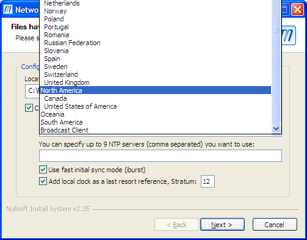
I work in the continental US, so I selected "United States of Amera". I also added the local UNH time server wilmot. Note - the UNH time server is overly great (stratum 2) and why is it not called time, ntp, or even bigben? I turned on iburst mode. Is that a good thing?
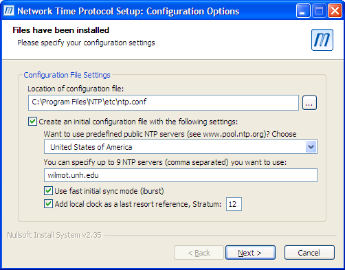
I setup ntp to run as the user "ntp".
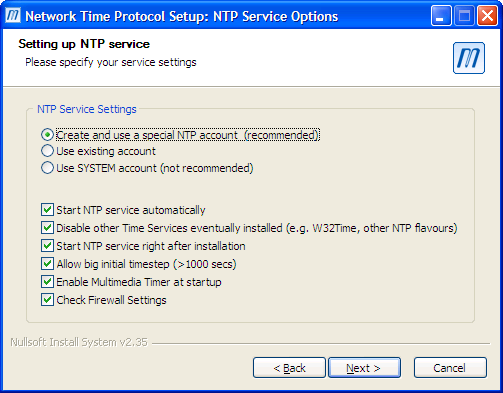
You can restart the service from the start menu. Or you can install the free Meinberg NTP Time Server Monitor.
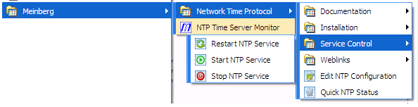
Run the Time Server Monitor:
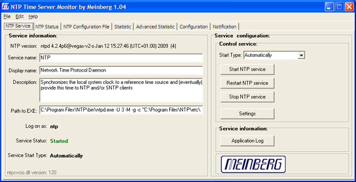
Go to the configuration tab and select:
Show advanced tabs Activate logging Enable DNS Lookup External NTP Server: wilmot.unh.edu (if you are at UNH)
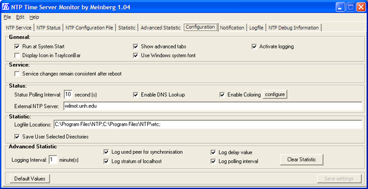
Now you can check out how the time servers are doing.
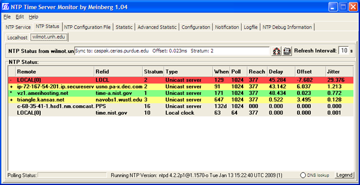
Here is the legend to go with the above display:
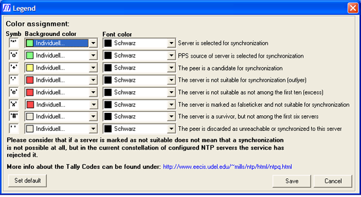
Enable statistics generation so you can see how the system is performing. It needs to run for a while before the graph is interesting.
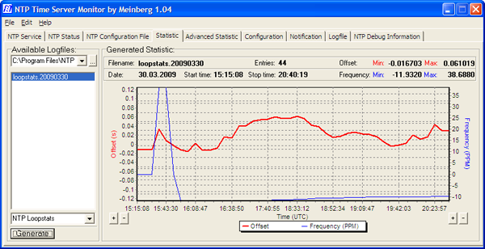
Here is the final ntp.conf file that I generated. I added a couple extra ntp pool servers.
server 127.127.1.0 # but it operates at a high stratum level to let the clients know and force them to # use any other timesource they may have. fudge 127.127.1.0 stratum 12 # Use a NTP server from the ntp pool project (see http://www.pool.ntp.org) # Please note that you need at least four different servers to be at least protected against # one falseticker. If you only rely on internet time, it is highly recommended to add # additional servers here. # The 'iburst' keyword speeds up initial synchronization, please check the documentation for more details! server 0.us.pool.ntp.org iburst server 1.us.pool.ntp.org iburst server 2.us.pool.ntp.org iburst # Extra servers added by Kurt server 3.us.pool.ntp.org minpoll 12 maxpoll 17 server 0.north-america.pool.ntp.org minpoll 12 maxpoll 17 server 1.north-america.pool.ntp.org minpoll 12 maxpoll 17 server 2.north-america.pool.ntp.org minpoll 12 maxpoll 17 # Use specific NTP servers server wilmot.unh.edu iburst ########################################################### #Section insert by NTP Time Server Monitor 3/30/2009 enable stats statsdir "C:\Program Files\NTP\etc\" statistics loopstats ###########################################################If you are considering setting up your own Stratum 1 NTP server, Meinberg and Symmetricom make NTP appliances - 1U rack mount systems that you just plug in the GPS antenna.
03.29.2009 13:43
UNH Greenhouse
Friday and Saturday were the UNH
Greenhouse open house. I've been going the last three years. I
picked up thyme and dill plants and ran into my master gardner
neighbor Genie.
03.29.2009 13:22
Zones of Confidence on charts (CATZOCs)
The Case of the Unwatched ZOC - Vessel Groundings Due To
Navigational Chart Errors [gCaptain]
... Says Couttie: "If you go through an an area which is poorly surveyed or unsurveyed then, regardless of what's shown on the chart, you really have to think whether you should be there at all. If you do, then it's important to check the chart source data diagram or Category Zones of Confidence, CATZOCs, to see just how reliable the chart, whether paper or ECDIS, actually is. ECDIS isn't necessarily going to be more accurate than paper." ...The podcast is here: The Case Of The Unwatched ZOCs [Bob Couttie]
03.29.2009 06:59
ONR and infrared marine mammal detection
Infra-red detectin of Marine Mammals from ship-based platforms -
ONRBAA09-015
The Office of Naval Research (ONR) is interested in receiving proposals for research into the use of infra-red (IR) band technology as a potential means of detecting marine mammals. There are significant concerns about the effects of anthropogenic sound (e.g., use of military sonar, seismic research and exploration, marine construction, shipping) on marine mammals. As a means of minimizing interactions between anthropogenic acoustic activities and marine mammals, human observers are often employed to detect marine mammals and initiate mitigation strategies when mammals are observed sufficiently close to active sound sources. Visual observations, the current standard, are limited in their effective use to daytime, comparatively clear atmospheric conditions and relatively low sea states. Additionally, alternative detection methods currently being used to detect marine mammals include 1) passive acoustics, which is dependent on vocalizing animals; and 2) active acoustics, which has been reserved for research, releases energy into the water and must be assessed for possible adverse effects. Because all these methods have their shortcomings, additional alternative and/or complementary marine mammal detection methods are being developed, including use of radar and IR. Our goal is to evaluate the efficacy of IR imagery (still and/or video) for near-real-time detection of marine mammals from ship-based platforms. Ultimately IR detection might be optimized by use of high-incident angle views of the sea surface via unmanned aerial vehicles (or other platforms). However, to minimize initial investment costs while we evaluate the potential of this detection technology we will not here invest in studies using a costly autonomous flying platform. Rather we seek to invest in research using ship-based, more oblique-angle techniques coupled with visual observation of marine mammals, which offers validation opportunities. At the discretion of the proposer, ship-based measurements might utilize tethered balloons, kites or tall masts to increase incident viewing angles of the imagery system, and might be preceded by land (cliff)-based evaluations that could cost effectively develop and test the proposed technology. Our interest is in developing and testing a small, light weight, low power IR imagery (still and/or video) system that may be adaptable to diverse platforms. Therefore the focus of this BAA is on uncooled (microbolometric) IR systems, and not cooled systems. ...See also: Marine Mammals & Bioogical Oceanography [ONR]
03.27.2009 07:00
Discount Marine Electronics - Ripping off Panbo
In the catagory of "Things not to
do": Ben Ellison was tolk that Discount Marine Electronics ripped
off an article from his
Panbo site. Turns out that they automated the rip off process.
Here is Ben's comments about Discount Marine Electronics embedded
in their web page. Remember not to put links to sites like this.
Just write out the URLs so that we are not helping their search
engine ranking.
The web works better when people play nice.
The web works better when people play nice.
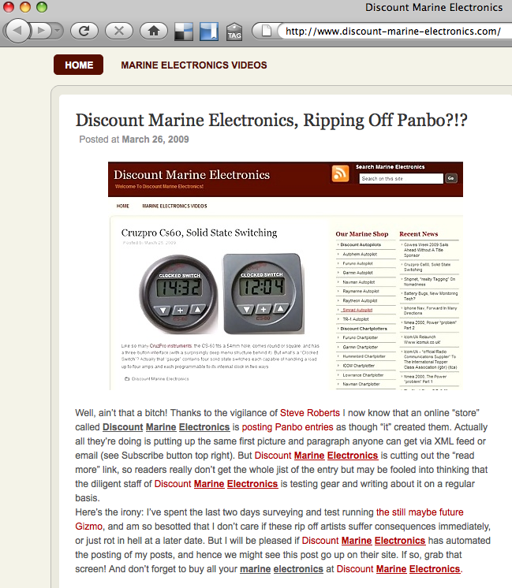
03.27.2009 06:28
django database integrity
In
Django Tip: Controlling Admin (Or Other) Access [Malcolm
Tredinnick], he says this:
A Warning About Database Changes If you're making any database changes, particularly using django-admin.py, make sure to make them using the settings file that includes all of your applications. The reason for this is that Django sanitises the Content Type data when it loads any new tables, removing entries that don't belong to applications it knows about. So if changes were made to the content types using a settings file that didn't contain the admin application in the INSTALLED_APPS list, the admin's content type table entry would be removed. This wouldn't be a good idea.This doesn't sound good. Does it imply that I had better have models for all tables in my database? I often use django admin to look at part of a database. I haven't tried modifying a database that has add additional tables that django is not aware of, but I had better watch out (unless I'm not understanding what he means).
03.26.2009 06:39
New django applications - The Washington Times
I got to listen to This
Week In Django (TWID) 55 yesterday while driving for work.
There was an exciting segment in the Community Catchup
section:
Washington Times releases open source projects
Washington Times releases open source projects
django-projectmgr: a source code repository manager and issue tracking
application. It allows threaded discussion of bugs and features,
separation of bugs, features and tasks and easy creation of source
code repositories for either public or private consumption.
django-supertagging: an interface to the Open Calais service for
semantic markup.
django-massmedia: a multi-media management application. It can create
galleries with multiple media types within, allows mass uploads
with an archive file, and has a plugin for fckeditor for embedding
the objects from a rich text editor.
django-clickpass: an interface to the clickpass.com OpenID service
that allows users to create an account with a Google, Yahoo!,
Facebook, Hotmail or AIM account.
03.25.2009 23:11
Kings Point training simulator
Today, I sat in with a NOAA team
while they were training on a bridge simulator at Kings
Point.
Working through all the different issues provided by the instructor controlling the simulator:
The shift hand over...
Paper charts...
Working through all the different issues provided by the instructor controlling the simulator:
The shift hand over...
Paper charts...
03.23.2009 09:23
The beginning of spring
Just today, I saw bulbs finally
pushing through the cold ground.
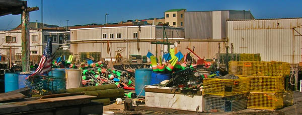
03.22.2009 16:26
Congressional Report - Navy sonar and whales
Whales and Sonar:
Environmental Exemptions for the Navy's Mid-Frequency Active Sonar
Training [opencrs] February 18, 2009
Mid-frequency active (MFA) sonar emits pulses of sound from an underwater transmitter to help determine the size, distance, and speed of objects. The sound waves bounce off objects and reflect back to underwater acoustic receivers as an echo. MFA sonar has been used since World War II, and the Navy indicates it is the only reliable way to track submarines, especially more recently designed submarines that operate more quietly, making them more difficult to detect. Scientists have asserted that sonar may harm certain marine mammals under certain conditions, especially beaked whales. Depending on the exposure, they believe that sonar may damage the ears of the mammals, causing hemorrhaging and/or disorientation. The Navy agrees that the sonar may harm some marine mammals, but says it has taken protective measures so that animals are not harmed. MFA training must comply with a variety of environmental laws, unless an exemption is granted by the appropriate authority. Marine mammals are protected under the Marine Mammal Protection Act (MMPA) and some under the Endangered Species Act (ESA). The training program must also comply with the National Environmental Policy Act (NEPA), and in some cases the Coastal Zone Management Act (CZMA). Each of these laws provides some exemption for certain federal actions. The Navy has invoked all of the exemptions to continue its sonar training exercises. Litigation challenging the MFA training off the coast of Southern California ended with a November 2008 U.S. Supreme Court decision. The Supreme Court said that the lower court had improperly favored the possibility of injuring marine animals over the importance of military readiness. The Supreme Courts ruling allowed the training to continue without the limitations imposed on it by other courts.
03.21.2009 09:23
Blender
Worth a read of the whole article:
Blending in - CGenie inerview Blender - Interview Ton
Rossendaal.
... Ton: Blender's much disputed UI hasn't been an unlucky accident coded by programmers but was developed almost fifteen years ago in-house by artists and designers to serve as their daily production tool. This explains why it's non-standard, using concepts based on advanced control over data (integrated linkable database) and the fastest workflow possible (subdivision based UI layouts, non-blocking and non-modal workflow). Blender uses concepts similar to one of the world's leading UI designers Jef Raskin. When I read his book "Humane Interface" five years ago, it felt like coming home. His son Aza Raskin has continued his work with great results. He's now lead UI design at Mozilla and heads up his own startup. If you check on his work on humanized.com you can see concepts we're much aligned with. ... What Blender especially failed in was mostly a result of evolutionary dilution, coming from some laziness and a pragmatic 'feature over functionality' approach. Making good user interfaces is not easy, and people don't always have time to work on that. Moreover, because of our fast development, it's not always clear to new users whether they are trying to use something that's brilliant or is still half working, or simply broken by design! For me this mostly explains the tough initial learning curve for Blender, or why people just give up on it. ...
03.20.2009 23:21
Great and Little Bay missing in Open Street Map
osm-3D Germany looks cool, but what
happened to
Great and Little Bays in the normal 2D OSM?
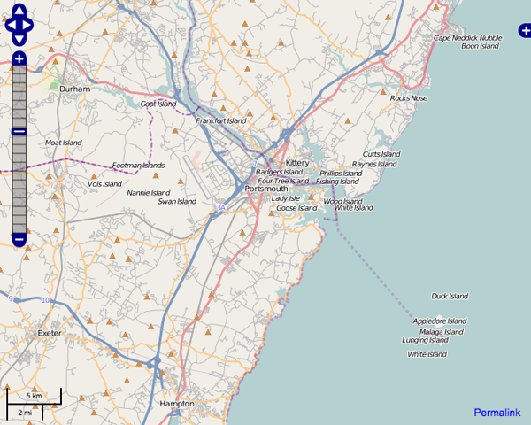
03.20.2009 23:00
New Paleomag book by Lisa Tauxe
Just out:
Web Edition of: Essentials of Paleomagnetism: Web Edition 1.0 (March 18, 2009) by Lisa Tauxe with contributions from: Subir K. Banerjee, Robert F. Butler and Rob van der Voo
Web Edition of: Essentials of Paleomagnetism: Web Edition 1.0 (March 18, 2009) by Lisa Tauxe with contributions from: Subir K. Banerjee, Robert F. Butler and Rob van der Voo
03.20.2009 10:58
Unfriendly government messages
This is the first time I've seen something like this. The web page it came from doesn't have any access control on it (other than showing this as a giant alert box). Bold added by me. This comes when you click on the historical data request from here:
NAIS Data Feed and Data Request Terms and Conditions Disclaimer
Warning!! Title 18 USC Section 1030 Unauthorized access is prohibited by Title 18 USC Section 1030. Unauthorized access may also be a violation of other Federal Law or government policy, and may result in criminal and/or administrative penalties. Users shall not access other users' system files without proper authority. Absence of access controls IS NOT auhtorization for access! USCG information systems and related equipment are intended for communication, transmission, processing and storage of U.S. Government information. These systems and equipment are subject to monitoring to ensure proper functioning, to protect against improper or unathorized use or access, and to verify the presence or performance of applicable security features or procedures, and for other like purposes. Such security monitoring may result in the acquisition, recording, and analysis of all data being communicated, transmitted, processed or stored in this system by a user. If security monitoring reveals evidence of possible criminal activity, such evidence may be provided to law enforcement personnel. Use of this system constitutes consent to such security monitoring. Title 5 USC Section 552A This System contains information protected under the provisions of the Privacy Act of 1974 (5 U.S.C. 552a). Any privacy information displayed on the screen or printed must be protected from unauthorized disclousre. Employees who violate privacy safeguards may be subject ot disciplinary actions, a fine of up to $5,000 per disclosure, or both. Information in this system is provided for use in official Coast Guard business only. Requests for information from this system from persons or organizations outside the U.S. Coast Guard should be forwarded to Commandant (G-MRI-1) or Commandant (G-OCC). Warning!!
03.19.2009 12:19
GEOS 3.1.0 released
From: Paul Ramsey
Subject: [geos-devel] GEOS 3.1.0
To: GEOS Development List
PostGIS Users Discussion
The GEOS team is pleased to announce that GEOS 3.1.0 has been pushed
out the door, cold, wet, trembling and looking for love.
http://download.osgeo.org/geos/geos-3.1.0.tar.bz2
Version 3.1.0 includes a number of improvements over the 3.0 version:
- PreparedGeometry operations for very fast predicate testing.
- Intersects()
- Covers()
- CoveredBy()
- ContainsProperly()
- Easier builds under MSVC and OpenSolaris
- Thread-safe CAPI option
- IsValidReason added to CAPI
- CascadedUnion operation for fast unions of geometry sets
- Single-sided buffering operation added
- Numerous bug fixes.
http://trac.osgeo.org/geos/query?status=closed&milestone=3.1.0&order=priority
Users of the upcoming PostGIS 1.4 will find that compiling against
GEOS 3.1 provides them access to some substantial performance
improvements and some extra functions.
03.18.2009 17:08
Dave Sandwell's compensation from Google
I was tald that Dave Sandwell
received compensation from Google for the bathymetery they used. I
looked up the source that was quoted. He was not compensated. I
have licenses Google Earth Pro and Sketchup Pro from Google that I
don't pay for, as do many other educators.
Seabed images create waves [nature news]
Seabed images create waves [nature news]
... So far, all that Sandwell has received in return for his work is a year's worth of Google Earth Pro software - normal cost US$400 - for his classes. He is now applying to a Google foundation for funds to support a postdoctoral research position in oceanography.
03.18.2009 10:37
Django 1.0.2 with mysql library
Here is taking a quick look at the
mysql database with Django. This is using the library database dump
from before. I used the draft version of the 2.0 Django Book. Turns out this
database isn't very interested. All but the primary keys are
varchar, so I can't show cool foreign key stuff. You will need fink
unstable for this.
Note that the database shown here is not how I would design things. It needs foreign keys for authors and others, date types for dates, and a few other things before it would be something I would want to use.
And for reference, here are the CREATE statements for the tables grabbed from the dump.
Note that the database shown here is not how I would design things. It needs foreign keys for authors and others, date types for dates, and a few other things before it would be something I would want to use.
% fink install django-py26 mysql-python-py26Now start working on the django project:
% django-admin.py startproject ccom_library % cd ccom_library % python manage.py startapp library % echo $USERNow edit settings.py and change these lines:
DATABASE_ENGINE = 'mysql' DATABASE_NAME = 'library' DATABASE_USER = 'YourShortUsernameHere' # what $USER returnedTo the INSTALLED_APPS section, add these lines:
'django.contrib.admin',
'ccom_library.library',
Now edit urls.py so that it looks like this:
from django.conf.urls.defaults import *
from django.contrib import admin
admin.autodiscover()
urlpatterns = patterns('',
(r'^admin/(.*)', admin.site.root),
)
Now get the models from the database.
% python manage.py inspectdb > library/models.pyIn my case, I had to edit the resulting library/models.py to remove some old crusty tables. Here is the models.py:
# This is an auto-generated Django model module.
# You'll have to do the following manually to clean this up:
# * Rearrange models' order
# * Make sure each model has one field with primary_key=True
# Feel free to rename the models, but don't rename db_table values or field names.
#
# Also note: You'll have to insert the output of 'django-admin.py sqlcustom [appname]'
# into your database.
from django.db import models
class Author(models.Model):
authorid = models.IntegerField(primary_key=True)
fullname = models.CharField(max_length=765, blank=True)
firstname = models.CharField(max_length=150, blank=True)
middlename = models.CharField(max_length=150, blank=True)
lastname = models.CharField(max_length=150, blank=True)
surname = models.CharField(max_length=15, blank=True)
organization = models.CharField(max_length=300, blank=True)
class Meta:
db_table = u'author'
class Bookformat(models.Model):
bfid = models.IntegerField(primary_key=True)
bookformat = models.CharField(max_length=135, blank=True)
class Meta:
db_table = u'bookformat'
class Library(models.Model):
libitemid = models.IntegerField(primary_key=True)
title = models.TextField(blank=True)
author = models.TextField(blank=True)
isbn = models.CharField(max_length=192, blank=True)
publisher = models.CharField(max_length=384, blank=True)
bookformat = models.CharField(max_length=135, blank=True)
first = models.CharField(max_length=6, blank=True)
signed = models.CharField(max_length=6, blank=True)
pubdate = models.CharField(max_length=96, blank=True)
pubplace = models.CharField(max_length=192, blank=True)
rating = models.CharField(max_length=36, blank=True)
condition = models.CharField(max_length=36, blank=True)
category = models.CharField(max_length=384, blank=True)
value = models.CharField(max_length=18, blank=True)
copies = models.IntegerField(null=True, blank=True)
read = models.CharField(max_length=6, blank=True)
print_field = models.CharField(max_length=6, db_column='print', blank=True) # Field renamed because it was a Python reserved word. Field name made lowercase.
htmlexport = models.CharField(max_length=6, blank=True)
comment = models.TextField(blank=True)
dateentered = models.CharField(max_length=36, blank=True)
source = models.CharField(max_length=384, blank=True)
cart = models.CharField(max_length=6, blank=True)
ordered = models.CharField(max_length=6, blank=True)
lccn = models.CharField(max_length=36, blank=True)
dewey = models.CharField(max_length=36, blank=True)
copyrightdate = models.CharField(max_length=96, blank=True)
valuedate = models.CharField(max_length=72, blank=True)
location = models.CharField(max_length=135, blank=True)
pages = models.IntegerField(null=True, blank=True)
series = models.TextField(blank=True)
keywords = models.TextField(blank=True)
dimensions = models.CharField(max_length=192, blank=True)
author2 = models.CharField(max_length=384, blank=True)
author3 = models.CharField(max_length=384, blank=True)
author4 = models.CharField(max_length=384, blank=True)
author5 = models.CharField(max_length=384, blank=True)
author6 = models.CharField(max_length=384, blank=True)
isbn13 = models.CharField(max_length=96, blank=True)
ccomlocid = models.CharField(max_length=30, blank=True)
issn = models.CharField(max_length=60, blank=True)
class Meta:
db_table = u'library'
def __unicode__(self):
return self.title
Then you have to create a library/admin.py to tell the admin app
which models to bring in.
from django.contrib import admin from ccom_library.library.models import Author, Bookformat, Library admin.site.register(Author) admin.site.register(Bookformat) admin.site.register(Library)
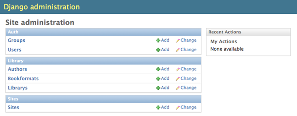
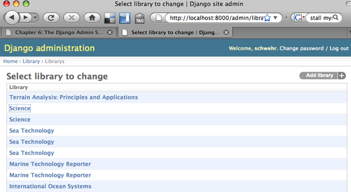
And for reference, here are the CREATE statements for the tables grabbed from the dump.
CREATE TABLE `author` ( `authorid` int(10) unsigned NOT NULL auto_increment, `fullname` varchar(255) default NULL, `firstname` varchar(50) default NULL, `middlename` varchar(50) default NULL, `lastname` varchar(50) default NULL, `surname` varchar(5) default NULL, `organization` varchar(100) default NULL, PRIMARY KEY (`authorid`) ) ENGINE=InnoDB AUTO_INCREMENT=754 DEFAULT CHARSET=utf8; CREATE TABLE `bookformat` ( `bfid` int(10) unsigned NOT NULL auto_increment, `bookformat` varchar(45) default NULL, PRIMARY KEY (`bfid`) ) ENGINE=InnoDB AUTO_INCREMENT=75 DEFAULT CHARSET=utf8; CREATE TABLE `library` ( `libitemid` int(10) unsigned NOT NULL auto_increment, `title` text, `author` text, `isbn` varchar(64) default NULL, `publisher` varchar(128) default NULL, `bookformat` varchar(45) default NULL, `first` char(2) default NULL, `signed` char(2) default NULL, `pubdate` varchar(32) default NULL, `pubplace` varchar(64) default NULL, `rating` varchar(12) default NULL, `condition` varchar(12) default NULL, `category` varchar(128) default NULL, `value` varchar(6) default NULL, `copies` int(10) unsigned default NULL, `read` char(2) default NULL, `print` char(2) default NULL, `htmlexport` char(2) default NULL, `comment` text, `dateentered` varchar(12) default NULL, `source` varchar(128) default NULL, `cart` char(2) default NULL, `ordered` char(2) default NULL, `lccn` varchar(12) default NULL, `dewey` varchar(12) default NULL, `copyrightdate` varchar(32) default NULL, `valuedate` varchar(24) default NULL, `location` varchar(45) default NULL, `pages` int(10) unsigned default NULL, `series` text, `keywords` text, `dimensions` varchar(64) default NULL, `author2` varchar(128) default NULL, `author3` varchar(128) default NULL, `author4` varchar(128) default NULL, `author5` varchar(128) default NULL, `author6` varchar(128) default NULL, `isbn13` varchar(32) default NULL, `ccomlocid` varchar(10) default NULL, `issn` varchar(20) default NULL, PRIMARY KEY (`libitemid`) ) ENGINE=InnoDB AUTO_INCREMENT=19135 DEFAULT CHARSET=latin1;
03.18.2009 09:20
mysql kickstart in fink
Based on
notes by Rob Braswell...
First install mysql:
First install mysql:
% fink install mysql-client mysqlor
% fink install mysql-ssl-client mysql-sslNow get the server running and make it start at boot.
% sudo daemonic enable mysql % sudo systemstarter start daemonic-mysql % sudo mysqladmin -u root password myrootpasswordCreate a user account for yourself. If you use the nopasswd account, this db will be wide open to trouble.
% echo "CREATE USER $USER;" | mysql -u root -p # For unsecure no pass account... % echo "CREATE USER $USER IDENTIFIED BY 'myuserpassword';" | mysql -u root -p # Better version with passwordGive your account access to all the databases.
% echo "GRANT ALL PRIVILEGES ON *.* TO $USER@\"localhost\";" | mysql -u root -p # No passwd version % echo "GRANT ALL PRIVILEGES ON *.* TO $USER@\"localhost\" IDENTIFIED BY 'myuserpassword';" | mysql -u root -p # Password versionMake a database to which you can add tables. I'm playing with a library dump.
% echo "CREATE DATABASE library;" | mysql % echo "CREATE DATABASE library;" | mysql -p # password versionNow I insert the dump Les made into the local mysql database:
% mysql library < library-dump.sqlWarning: running mysql with no password for a user is only advisable in a sandbox for testing. If you do that in an environment where others can get anywhere near your database, you will be asking for trouble.
03.17.2009 13:36
Right Whales in the NYTimes
Thanks to Janice for this
article:
The Fall and Rise of the Right Whale
The Fall and Rise of the Right Whale
... The researchers, from the National Oceanic and Atmospheric Administration and the Georgia Wildlife Trust, are part of an intense effort to monitor North Atlantic right whales, one of the most endangered, and closely watched, species on earth. As a database check eventually disclosed, the whale was Diablo, who was born in these waters eight years ago. Her calf - at a guess 2 weeks old and a bouncing 12 feet and 2 tons - was the 38th born this year, a record that would be surpassed just weeks later, with a report from NOAA on the birth of a 39th calf. The previous record was 31, set in 2001. ...
03.16.2009 15:35
matplotlib basemap with SqlSoup/SqlAlchemy
Here is my first take on trying to
better handle plotting of data from my big database. On a mac,
install matplotlib and basemap (make sure you enable the unstable
tree in fink... run "fink configure"). [Thanks to Dale for the
suggested clarification]
% fink install matplotlib-basemap-data-py25First import needed modules and open the database.
% ipython2.5 -pylab -pprint
from sqlalchemy.ext.sqlsoup import SqlSoup
from sqlalchemy import or_, and_, desc
from sqlalchemy import select, func
db = SqlSoup('sqlite:///ais.db3')
Here is the first style of trying to fetch the data from all
vessels with the invalid MMSI of 0.
p = db.position.filter(db.position.UserID==0).all()
len(p)
Out: 1878
p[0]
Out: MappedPosition(key=54,MessageID=1,RepeatIndicator=0,UserID=0,
NavigationStatus=0,ROT=-128,SOG=Decimal("0"),PositionAccuracy=0,
longitude=Decimal("-76.2985983333"),latitude=Decimal("36.8414283333"),
COG=Decimal("274.7"),TrueHeading=511,TimeStamp=36,RegionalReserved=0,
Spare=0,RAIM=True,state_syncstate=0,state_slottimeout=1,state_slotoffset=0,
cg_r=None,cg_sec=1222819224,
cg_timestamp=datetime.datetime(2008, 10, 1, 0, 0, 24))
x = np.array([float(report.longitude) for report in p])
y = np.array([float(report.latitude) for report in p])
That brings in way too much of the database when I just need x and
y.
pos = db.position._table s = select([pos.c.longitude,pos.c.latitude],from_obj=[pos],whereclause=(pos.c.UserID==0)) track = np.array([ (float(p[0]),float(p[1])) for p in s.execute().fetchall()]) print track [[-76.29859833 36.84142833] [-76.29859333 36.84143833] [-76.29858667 36.84143667] ..., [-76.60878 37.16643833] [-76.60878167 37.16644 ] [-76.60878667 37.16643333]]That's better, but I really need it split into x and y for matplotlib.
s_x = select([pos.c.longitude],from_obj=[pos],whereclause=(pos.c.UserID==0)) s_y = select([pos.c.latitude],from_obj=[pos],whereclause=(pos.c.UserID==0)) track_x = np.array([ float(p[0]) for p in s_x.execute().fetchall()]) track_y = np.array([ float(p[0]) for p in s_y.execute().fetchall()])Now it is time to plot it!
from mpl_toolkits.basemap import Basemap xmin = track_x.min() xmax = track_x.max() ymin = track_y.min() ymax = track_y.max() # The best coastline is the 'h' version. map = Basemap(llcrnrlon=xmin-.25, llcrnrlat=ymin-.25, urcrnrlon=xmax+0.25, urcrnrlat=ymax+.25, resolution='h') map.plot(track_x,track_y) map.drawcoastlines()
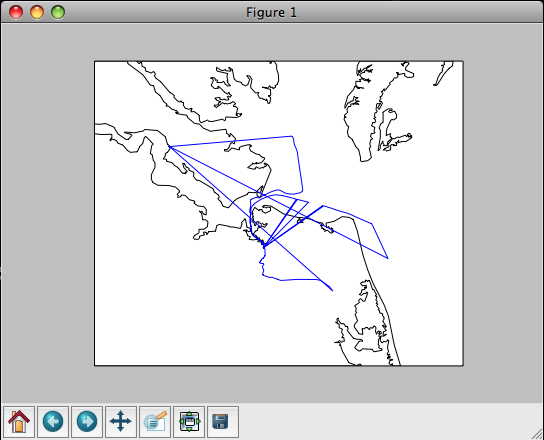
03.16.2009 07:51
GPSD and AIS
Eric S. Raymond (ESR) has been
working adding AIS message decoding to GPSD. This is a huge
contribution to the AIS community. My noaadata code is a research
type development as I explored what an AIS message definition XML
dialect might look like. Thanks Eric!
He just sent this email out to the gpsd-dev and gpsd-user mailing lists:
He just sent this email out to the gpsd-dev and gpsd-user mailing lists:
The rtcmdecode utility, formerly a filter that turned RTCM2 and RTCM3 packets into readable text dumps, has been renammed "gpsdecode" and now has tha ability to un-armor and text-dump common AIVDM sentences as well. Specifically, it can crack types 1, 2, 3, 4, 5, 9, and 18. I'd love to support others as well but I don't have regression tests for them. Tip of the hat to Kurt Schwehr of New Hampshire University for supplying test data and text dumps for these. The GPSD references page now includes a detailed description of how to interpret AIDVM, This is significant because public documentation on this has previously been quite poor. Many of the relevant standards are locked up behaind paywalls. Even if they were not, it turns out that assembling a complete picture of how both layers of the protocol work (not to mentional regional variants like St. Lawrence Seaway's AIS extensions like the Coast Guards's PAWSS) is a significant effort. The gpsd daemon itself does not yet do anything with AIVDM packets, though the analysis code in its driver is fully working and it could do anything we want with the data. I could reduce AIS message types 1, 3, 4, 9, and 18 (everything but 5) to O reports, but I'm far from sure this would actually be useful. I think it would make more sense to extend the GPSD protocol so it can report tagged locations (and associated data) from different sensors in the vicinity, including both GPSes and AIS receivers. I'll have more to say about this in an upcoming request for discussion on the protocol redesign.
03.15.2009 10:30
SQLite cheat sheet / tutorial
I don't know if this cheat sheet will
be helpful to others or not, but it will help me spend less time
looking up SQL syntax. I hope that the sections for table one and
table two will be accessable to beginners. This is a different
style than other tutorials I have seen on the web. It is done as a
big SQL file that you can either run at once or paste in line by
line. It only runs on SQLite, but I will try to alter it to work
with PostgreSQL and explain the differences in another post. SQLite
does some quirky things, but it is a good learning environment. For
example, it allows field types that do not make sense:
You can run these commands in one of three ways. The most educational is way is to just run this command:
The above two examples use an "in memory" database, so when you exit, everything goes away. If you want to have a database be saved to disk, do one of these two:
CREATE TABLE foo (a ASDF);ASDF is not a valid SQL type, but the command works.
You can run these commands in one of three ways. The most educational is way is to just run this command:
% sqlite3This will put you into sqlite's shell. You can paste in commands from the text and when you are done, quit it like this:
sqlite> .quitIf you want to quickly see what everything does, try this:
% sqlite3 < sqlite-tutorial.sql | lessThis will let you see both the commands being entered and the results.
The above two examples use an "in memory" database, so when you exit, everything goes away. If you want to have a database be saved to disk, do one of these two:
% sqlite3 demo.db3 % sqlite3 demo.db3 < sqlite-tutorial.sqlAnd now for the big tutorial...
-- This is an SQLite tutorial / cheat sheet by Kurt Schwehr, 2009
-- Conventions:
-- All SQL keyworks are written UPPERCASE, other stuff lowercase
-- All SQLite commands start with a "."
-- Two dashes start a comment in SQL
/* Another style of comments */
----------------------------------------
-- Setup SQLite for the tutorial
----------------------------------------
-- Ask SQLite for instructions
.help
-- Repeat every command for this tutorial
.echo ON
-- Ask SQLite to print column names
.header ON
-- Switch the column separator from '|' to tabs
.separator "\t"
-- Make SQLite print "Null" rather than blanks for an empty field
.nullvalue "Null"
-- Dump the settings before we go on
.show
----------------------------------------
-- Additional resources
----------------------------------------
-- This tutorial misses many important database concepts (e.g. JOIN and SUBQUERIES)
-- http://swc.scipy.org/lec/db.html
----------------------------------------
-- Basics
----------------------------------------
-- All SQL command end with a semicolon
-- Commands to query the database engine start with SELECT.
-- First hello world:
SELECT "hello world";
-- What is the current date and time?
SELECT CURRENT_TIMESTAMP;
-- Simple math
SELECT 1+2;
-- Calling a function
SELECT ROUND(9.8);
-- Multiple columns are separated by ","
SELECT "col1", "col2";
-- Label columns with AS
SELECT 1 AS first, 2 AS second;
----------------------------------------
-- Time to make a database table!
----------------------------------------
-- Create a first table containing two numbers per row
-- The table name follewd by pairs of <variable name>, <type> in ()
CREATE TABLE tbl_one (a INTEGER, b INTEGER, c INTEGER);
-- List all tables
.tables
-- List the CREATE commands for all tables
.schema
-- Add some data to the table
INSERT INTO tbl_one (a,b,c) VALUES (1,2,3);
INSERT INTO tbl_one (a,b,c) VALUES (4,5,6);
INSERT INTO tbl_one (a,b,c) VALUES (4,17,19);
INSERT INTO tbl_one (a,b,c) VALUES (42,8,72);
-- Show all of the data in the tables
SELECT * FROM tbl_one;
-- Show a smaller number of rows from the table
SELECT * FROM tbl_one LIMIT 2;
-- Only show a subset of the rows
SELECT a,c FROM tbl_one;
-- Fetch only rows that meet one criteria
SELECT * FROM tbl_one WHERE a=4;
-- Fetch only rows that meet multiple criteria
SELECT * FROM tbl_one WHERE a=4 AND b=5;
-- Fetch only rows that meet one of multiple criteria
SELECT * FROM tbl_one WHERE a=1 OR b=47;
-- Greater and less than comparisons work too
SELECT * FROM tbl_one WHERE b >= 8;
-- List all that are not equal too
SELECT * FROM tbl_one WHERE a <> 4;
-- Or list from a set of items
SELECT c,b FROM tbl_one WHERE c IN (3, 19, 72);
-- Order the output base on a field / column
SELECT * FROM tbl_one ORDER BY b;
-- Flip the sense of the order
SELECT * FROM tbl_one ORDER BY b DESC;
-- How many rows in the table?
SELECT COUNT(*) FROM tbl_one;
-- List the unique values for column a
SELECT DISTINCT(a) FROM tbl_one;
-- Count the distinct values for column a
SELECT COUNT(DISTINCT(a)) FROM tbl_one;
-- Get the minumum, maximum, average, and total values for column a
SELECT MIN(a),MAX(a), AVG(a), TOTAL(a) FROM tbl_one;
-- Remove a rows from the table
DELETE FROM tbl_one WHERE a=4;
-- See that we have gotten rid of two rows
SELECT * FROM tbl_one;
-- Adding more data. You can leave out the column/field names
INSERT INTO tbl_one VALUES (101,102,103);
-- Delete a table
DROP TABLE tbl_one;
----------------------------------------
-- Time to try more SQL data types
-- There are many more types. For example, see:
-- http://www.postgresql.org/docs/current/interactive/datatype.html
-- WARNING: SQLite plays fast and loose with data types
-- We will pretend this is not so for the next section
-- Make a table with all the different types in it
-- We will step through the types
CREATE TABLE tbl_two (
an_int INTEGER,
a_key INTEGER PRIMARY KEY,
a_char CHAR,
a_name VARCHAR(25),
a_text TEXT,
a_dec DECIMAL(4,1),
a_real REAL,
a_bool BOOLEAN,
a_bit BIT,
a_stamp TIMESTAMP,
a_xml XML
);
-- If we add a row that is just an integer, all the fields
-- except a_key will be empty (called 'Null').
-- If you don't specify the primary key value, it will be
-- created for you.
INSERT INTO tbl_two (a_name) VALUES (42);
-- See what you just added. There will be a number of 'Null' columns
SELECT * FROM tbl_two;
-- A single character
INSERT INTO tbl_two (a_char) VALUES ('z');
-- VARCHAR are length limited strings.
-- The number in () is the maximum number of characters
INSERT INTO tbl_two (a_name) VALUES ('up to 25 characters');
-- TEXT can be any amount of characters
INSERT INTO tbl_two (a_text) VALUES ('yada yada...');
-- DECIMAL specifies an number with a certain number of decimal digits
INSERT INTO tbl_two (a_dec) VALUES
-- Booleans can be true or false
INSERT INTO tbl_two (a_bool) VALUES ('TRUE');
INSERT INTO tbl_two (a_bool) VALUES ('FALSE');
-- Adding bits
INSERT INTO tbl_two (a_bit) VALUES (0);
INSERT INTO tbl_two (a_bit) VALUES (1);
-- Adding timestamps... right now
INSERT INTO tbl_two (a_stamp) VALUES (CURRENT_TIMESTAMP);
-- Date, time, or both. Date is year-month-day.
INSERT INTO tbl_two (a_stamp) VALUES ('2009-03-15');
INSERT INTO tbl_two (a_stamp) VALUES ('9:02:15');
INSERT INTO tbl_two (a_stamp) VALUES ('2009-03-15 9:02:15');
-- Using other timestamps
INSERT INTO tbl_two (a_stamp) VALUES (datetime(1092941466, 'unixepoch'));
INSERT INTO tbl_two (a_stamp) VALUES (strftime('%Y-%m-%d %H:%M', '2009-03-15 14:02'));
-- XML markup
INSERT INTO tbl_two (a_xml) VALUES ('<start>Text<tag2>text2</tag2></start>');
-- Now you can search by columns being set (aka not Null)
SELECT a_key,a_stamp from tbl_two WHERE a_stamp NOT NULL;
----------------------------------------
-- Putting constraints on the database
-- and linking tables
-- NOT NULL forces a column to always have a value.
-- Inserting without a value causes an error
-- UNIQUE enforces that you can not make entries that are the same
-- DEFAULT sets the value if you don't give one
-- REFERENCES adds a foreign key pointing to another table
CREATE TABLE tbl_three (
a_key INTEGER PRIMARY KEY,
a_val REAL NOT NULL,
a_code INTEGER UNIQUE,
a_str TEXT DEFAULT 'I donno',
tbl_two INTEGER,
FOREIGN KEY(tbl_two) REFERENCES tbl_two(a_key)
);
-- a_key and a_str are automatically given values
INSERT INTO tbl_three (a_val,a_code,tbl_two) VALUES (11.2,2,1);
INSERT INTO tbl_three (a_val,a_code,tbl_two) VALUES (12.9,4,3);
-- This would be an SQL error, as the table already has a code of 2
-- INSERT INTO tbl_three (a_code) VALUES (2);
-- This would be an SQL error, as it has no a_val (which is NOT NULL)
--INSERT INTO tbl_three (a_code) VALUES (3);
SELECT * FROM tbl_three;
-- We can now combine the two tables. This is called a 'join'
-- It is not required to have foreign keys for joins
SELECT tbl_three.a_code,tbl_two.* FROM tbl_two,tbl_three WHERE tbl_two.a_key == tbl_three.tbl_two;
----------------------------------------
-- Extras for speed
-- For more on speed, see:
-- http://web.utk.edu/~jplyon/sqlite/SQLite_optimization_FAQ.html
-- TRANSACTIONs let you group commands together. They all work or if there is
-- trouble, they all fail. Transactions are faster than one at a time too!
-- You can also write "COMMIT;" to end a transaction
BEGIN TRANSACTION;
CREATE TABLE tbl_four (
a_key INTEGER PRIMARY KEY,
sensor REAL,
log_time TIMESTAMP);
INSERT INTO tbl_four VALUES (0,3.14,'2009-03-15 14:02');
INSERT INTO tbl_four VALUES (1,3.00,'2009-03-15 14:03');
INSERT INTO tbl_four VALUES (2,2.74,'2009-03-15 14:04');
INSERT INTO tbl_four VALUES (3,2.87,'2009-03-15 14:05');
INSERT INTO tbl_four VALUES (4,3.04,'2009-03-15 14:06');
END TRANSACTION;
-- INDEXes are important if you are searching on a particular field
-- or column often. It might take a while to create the index,
-- but once it is there, searching on that column is faster
CREATE INDEX log_time_indx ON tbl_four(log_time);
-- INDEXes are automatically created for PRIMARY KEYs and UNIQUE fields
-- Run vacuum if you have done a lot of deleting of tables or rows
VACUUM;
----------------------------------------
-- Find out SQLite's internal state
----------------------------------------
SELECT * FROM sqlite_master;
03.14.2009 17:21
PAWSS software specifications?
Can anyone point me to the software
and network interface specifications for the USCG Ports And Waterways
Safety System (PAWSS)
The PAWSS Vessel Traffic Service (VTS) project is a national transportation system that collects, processes, and disseminates information on the marine operating environment and maritime vessel traffic in major U.S. ports and waterways. The PAWSS VTS mission is monitoring and assessing vessel movements within a Vessel Traffic Service Area, exchanging information regarding vessel movements with vessel and shore-based personnel, and providing advisories to vessel masters. Other Coast Guard missions are supported through the exchange of information with appropriate Coast Guard units. ... The VTS system at each port has a Vessel Traffic Center that receives vessel movement data from the Automatic Identification System (AIS), surveillance sensors, other sources, or directly from vessels. Meteorological and hydrographic data is also received at the vessel traffic center and disseminate as needed. A major goal of the PAWSS VTS is to use AIS and other technologies that enable information gathering and dissemination in ways that add no additional operational burden to the mariner. The VTS adds value, improves safety and efficiency, but is not laborious to vessel operators. ... The Coast Guard recognized the importance of AIS and has led the way on various international fronts for acceptance and adoption of this technology. The Coast Guard permits certain variations of AIS in VTS Prince William Sound and has conducted or participated in extensive operational tests of several Universal AIS (ITU-R M.1371) precursors. The most comprehensive test bed has been on the Lower Mississippi River.I don't have any details of the modified messages in Alaska or what is actually transmitted in Mississippi.
03.14.2009 07:44
Visit Mars in google Earth 5.0
I talked about Google Earth's Mars
mode when it first came out, but check out this quick tour of
features.
Google Earth Mars Update - Live Imagery from Another Planet
Google Earth Mars Update - Live Imagery from Another Planet
03.14.2009 06:36
open source bug reporting
One of the best parts of open source
are when people users of software contribute back. Anders Olsson
reported that AIS msg 9 sends knots, not tenths of knots. It makes
sense to be knots as planes and helocopters most of the time can
travel much faster ships.
<!-- AIS MSG 1-3 - Class A vessel position report -->
<field name="SOG" numberofbits="10" type="udecimal">
<description>Speed over ground</description>
<unavailable>102.3</unavailable>
<lookuptable>
<entry key="102.2">102.2 knots or higher</entry>
</lookuptable>
<units>knots</units>
<scale>10</scale>
<decimalplaces>1</decimalplaces>
</field>
<!-- AIS MSG 9 - SAR position report -->
<!-- This is in knots, not tenths like msgs 1-3 -->
<field name="SOG" numberofbits="10" type="udecimal">
<description>Speed over ground</description>
<unavailable>1023</unavailable>
<lookuptable>
<entry key="1022">1022 knots or higher</entry>
</lookuptable>
<units>knots</units>
</field>
This fix will be in the next release of noaadata.03.13.2009 09:35
SqlSoup in SqlAlchemy
Yesterday, Brian C. showed me how
easy it is to access SQLite data from inside of Matlab. Looking at
my code to access the same database in Python with sqlite3, made me
look for an easier way. I looked at SqlAlchemy and was starting to
wonder why it was such a pain to specify all these object
relationships. Then I saw SqlSoup. As
usual, I'm working with AIS data from msgs 1-3 and 5.
% sqlite ais.db3 .schema CREATE TABLE position ( key INTEGER PRIMARY KEY, MessageID INTEGER, RepeatIndicator INTEGER, UserID INTEGER, NavigationStatus INTEGER, ROT INTEGER, SOG DECIMAL(4,1), PositionAccuracy INTEGER, longitude DECIMAL(8,5), latitude DECIMAL(8,5), COG DECIMAL(4,1), TrueHeading INTEGER, TimeStamp INTEGER, RegionalReserved INTEGER, Spare INTEGER, RAIM BOOL, state_syncstate INTEGER, state_slottimeout INTEGER, state_slotoffset INTEGER, cg_r VARCHAR(15), cg_sec INTEGER, cg_timestamp TIMESTAMP ); CREATE TABLE shipdata ( key INTEGER PRIMARY KEY, MessageID INTEGER, RepeatIndicator INTEGER, UserID INTEGER, AISversion INTEGER, IMOnumber INTEGER, callsign VARCHAR(7), name VARCHAR(20), shipandcargo INTEGER, dimA INTEGER, dimB INTEGER, dimC INTEGER, dimD INTEGER, fixtype INTEGER, ETAminute INTEGER, ETAhour INTEGER, ETAday INTEGER, ETAmonth INTEGER, draught DECIMAL(3,1), destination VARCHAR(20), dte INTEGER, Spare INTEGER, cg_r VARCHAR(15), cg_sec INTEGER, cg_timestamp TIMESTAMP );Here is a quick example of looking at the data with SqlSoup:
% ipython
from sqlalchemy.ext.sqlsoup import SqlSoup
db = SqlSoup('sqlite:///ais.db3')
db.position.get(10)
Out: MappedPosition(key=10,MessageID=1,RepeatIndicator=0,UserID=366994950,
NavigationStatus=7,ROT=-128,SOG=Decimal('0.1'),PositionAccuracy=0,
longitude=Decimal('-76.0895316667'),latitude=Decimal('36.90689'),
COG=Decimal('87.8'),TrueHeading=511,TimeStamp=7,RegionalReserved=0,
Spare=0,RAIM=False,state_syncstate=0,state_slottimeout=3,
state_slotoffset=31,cg_r=None,cg_sec=1222819204,
cg_timestamp=datetime.datetime(2008, 10, 1, 0, 0, 4))
p = db.position.get(10)
p.longitude,p.latitude,p.UserID,p.cg_sec
Out[8]: (Decimal('-76.0895316667'), Decimal('36.90689'), 366994950, 1222819204)
I still have more to figure out with SqlSoup and it would be great
to make this work seamlessly with matplotlib. Also, Elixir looks very much like
the Django ORM.03.12.2009 08:11
AIS NMEA message lookup table
The first letter of the 6th field of
an AIS AIVDM NMEA string determines the message type (at least for
the the first scentence of a message). For single sentence (aka
line) messages, this makes using egrep really easy. The class A
position reports start with 1, 2, or 3. Here is a little bashism to
loop over log files and get the position records
I created the above table like this using my noaadata python package:
for file in log-20??-??-??; do
egrep 'AIVDM,1,1,[0-9]?,[AB],[1-3]' $file > ${file}.123
done
Here is my handy table of first characters:
Msg# 1st Char Message type === === ============ 0 0 Not used 1 1 Position report Class A 2 2 Position report Class A (Assigned schedule) 3 3 Position report Class A (Response to interrogation) 4 4 Base station report 5 5 Ship and voyage data 6 6 Addressed binary message (ABM) 7 7 Binary ack for addressed message 8 8 Binary broadcast message (BBM) 9 9 Airborn SAR position report 10 : Request UTC date 11 ; Current UTC date 12 < Addressed safety message 13 = Addressed safety ack 14 > Broadcast safety message 15 ? Interrogation request for a specific message 16 @ Assignment of report behavior 17 A DGNSS corrections from a basestation 18 B Position report Class B 19 C Position report Class B, Extended w/ static info 20 D Reserve slots for base stations 21 E Aid to Navigation (AtoN) status report 22 F Channel management 23 G Group assignment for reporting 24 H Static data report. A: Name, B: static data 25 I Binary message, single slot (addressed or broadcast) 26 J Multislot binary message with comm status (Addr or Brdcst)Things get a bit more tricky with multi-scentence messages. You have to normalize the ais messages to collapse the several lines into one very long line that violates the NMEA specification, which is in my opinion a very good thing to do.
% egrep -v 'AIVDM,1,1,[0-9]?,[AB]' file.ais | ais_normalize.py > file.ais.normNow apply grep like I showed above on the normalized file that only has the multi scentence messages.
I created the above table like this using my noaadata python package:
% ipython
import ais.binary
for i in range (30):
print i,ais.binary.encode[i]
03.11.2009 06:10
Cosco Busan USCG Marine Causualty Report
Coast Guard releases Cosco Busan marine casualty investigation
report [Coast Guard News]
Report of Investigation into the Allision of the Cosco Busan with the Delta tower of the San Francisco-Oakland Bay Bridge In San Francisco Bay on November 7, 2007 [pdf]
From the report, I can get the id that identifies this incident to the USCG:
http://cgmix.uscg.mil/PSIX/PSIXDetails.aspx?VesselID=512403
This shows us that the Cosco Busan was recertified on Oct 25, 2007. Since I have the MISLE Activity number, I should be able to go to Incident Investigation Reports (IIR) Search and get the report. Entering 3095030 in the search field currently gives no results. Hopefully, the Cusco Busan report will end up in the IIR Search page soon.
For illustration purposes, here is what another incident returns (this is the one I always seem to show as it is in Norfolk). Use activity id of 2277795:
There is an entry for each vessel and each involved organization, but these all point to the same report: ActID=2277795
And in my Google Earth visualization of MISLE:
Interesting to see what they black out in the report. I think everybody knows the Pilot's name at this point.
Report of Investigation into the Allision of the Cosco Busan with the Delta tower of the San Francisco-Oakland Bay Bridge In San Francisco Bay on November 7, 2007 [pdf]
From the report, I can get the id that identifies this incident to the USCG:
MISLE Activity Number: 3095030First, lets see what the USCG says about the Vessel. Go to the Port State Information eXchange Search and put "Cosco Busan" in the Vessel Name field. This results in the following URL:
http://cgmix.uscg.mil/PSIX/PSIXDetails.aspx?VesselID=512403
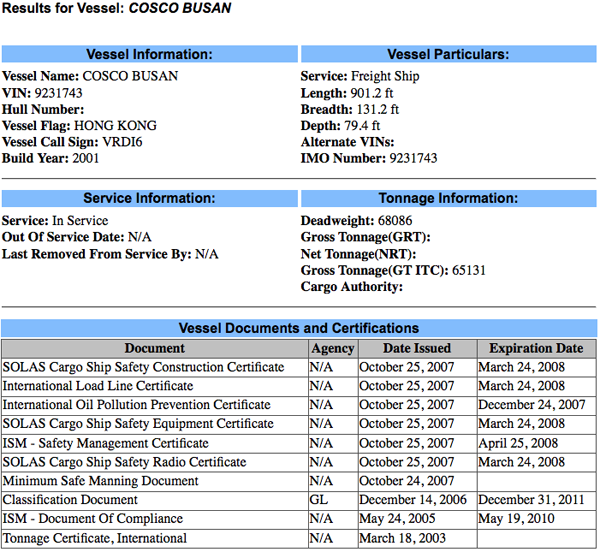
This shows us that the Cosco Busan was recertified on Oct 25, 2007. Since I have the MISLE Activity number, I should be able to go to Incident Investigation Reports (IIR) Search and get the report. Entering 3095030 in the search field currently gives no results. Hopefully, the Cusco Busan report will end up in the IIR Search page soon.
For illustration purposes, here is what another incident returns (this is the one I always seem to show as it is in Norfolk). Use activity id of 2277795:
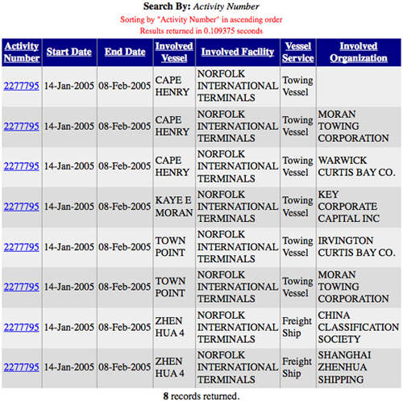
There is an entry for each vessel and each involved organization, but these all point to the same report: ActID=2277795
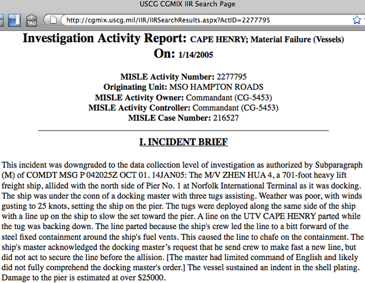
And in my Google Earth visualization of MISLE:
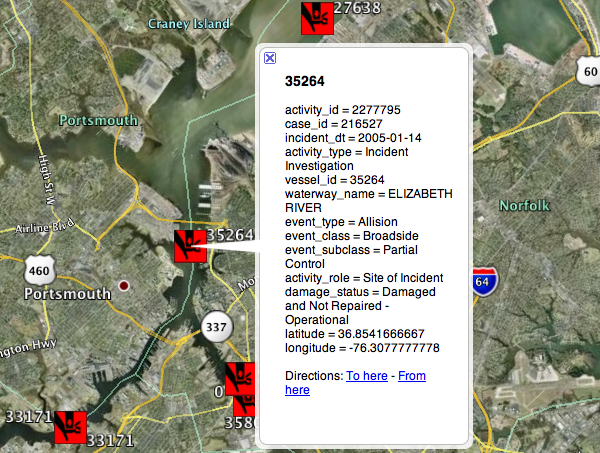
Interesting to see what they black out in the report. I think everybody knows the Pilot's name at this point.
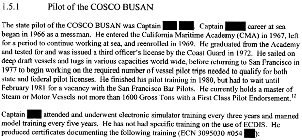
03.10.2009 16:44
Managing distributed XML document editing for nautical publications
I am looking for comments and
discussion about this post. Please see my LiveJournal post
to make comments.
Warning: This is a thought experiment meant to generate conversation. It's in no way polished.
Recently, I posted how Matt and I think the XML markup might look for a geospatially enabled nautical publication. There are details missing including the geographic feature table. GeoZui was originally built with Tcl/Tk, so it was easiest for Matt to his familiarity with Tcl to build a quick table. There is an even bigger issue looming to the general problem. The traditional view of updating nautical publications seems to be very much like the traditional linear model of a book. There is a key author at the Hydrographic Organization (HO) and maybe some editors. This has worked effectively for the last century. We could take the current PDF and paper product and convert it to a new XML format and use traditional tools such as text editors and revision control (e.g. subversion [svn]) or a database and make it work.
However, I'd like to take a step back and imagine that we are starting from scratch with no pre-existing infrastructure. Throw away any constraints that particular countries might have and ask: What would be the best system that we could build now that would work for the next century? I know this is a bit ridiculous, but humor me for now.
A use case
NOTE: There should be many more use cases for this topic, but let's start with one.
What I think there needs to be is a traceable cycle of information. In the field or on the ship, anyone should be able to make a note and/or take a picture and submit an error, update, addition, or suggestion back to the HO. Let me give an example to illustrate how the cycle might work. A mariner enters a port and sees that there is a new pier on the south side of the harbor replacing an older pier with a different configuration. The person pulls out their mobile phone (iPhone, Android, CrackBerry, etc) and runs a submit Coast Pilot (CP) note application. The app uses the phone's builtin camera to grab a picture, tags the picture with the GPS position from the builtin GPS, then queues the update. Later, when the mobile phone detects the person is no longer moving, the phone puts up a notice that there is a submission waiting. The user takes a moment to write that the pier is different and hits the send button. The phone sends the update to a public website for review. Local mariners comment on the website that the pier is indeed different and give the name of the company working on the pier. The HO is notified of the update, reviews the extra comments, and spends a little bit of money for an up-to-date satellite orthophoto. The HO digitizes the pier and sends notices to the charting branch and the nautical publications. In the nautical publications group, an author calls up a list of all the sections of text that refer to the pier and makes any changes necessary after talking to the pier authorities. The text changes are tagged with all the information about the edit including references to the initial submission in the field. The changes are passed to the editor for review. Once these changes are accepted a new coast pilot is generated, the submission note is marked as finished, and all the systems that use the coast pilot see the update and adjust their products.
This above is just an instance of what is called a "use case" in software engineering terminology. Try not get hung up on the details such as construction permitting in some countries already mandates submitting changes to the HO. The goal is to think about what a workflow might look like and what tools could support the process. How can we work with a marked up text document that makes it easy for the people editing and allows us to see where any of the text came from (aka provenance)? I don't know what the answer is, but talking to people at SNPWG brought up a number of ideas. Here are some of the thoughts that I've had and I would really like to hear what others think.
What this post is not
This is in no way a complete run through what needs to be discussed!
Another important topic is managing image submissions. We would like to be able to avoid trouble with copyright or at least track who controls the rights. Georeferencing, feature identification and tagging will be important. I will try to talk more about this some other time.
These are in no particular order and I'm leaving out a number of commercial solutions (e.g. Visual Studio Team Solution. And I'm mixing types of technology.
The Usual Suspects
These are tools that have been used in the last 20 years to produce nautical publications. This is probably a fairly traditional style of creating publications.
Microsoft Word has been used to create all sorts of documents. It can do indexing, change tracking, comments, and all sorts of other fancy things. It tries to be everything to everybody, but trying to manage large teams using track changes is enough to make me go crazy. Plus, you never know what Microsoft will decide to do with Word in the future. I've seen people who are power users of Word and they do amazing things. But can a Word document handle 20 years of change tracking?
Adobe FrameMaker (or just Frame) has been the solution for team based, large document generation. I've used Frame and seen groups such as Netscape's directory server (slapd) Team produce incredibly intricate documents. MS Word is still trying to catch up to the power of Frame in 1997. And that's before XML came into the core of Frame. However, it does seem like Adobe really doesn't want to keep Frame alive. Frame supports DITA, which I will talk about later.
Several people have told me that they see Adobe replacing Frame with InDesign. I really do not see how InDesign can cope with the workflow of a constantly updating document such as a Coast Pilot. Perhaps there is more to InDesign than I realize.
Revision Control Systems With my background, the first thing that came to my mind is some sort of distributed revision control system / source control system (SCM). My experience has been mostly with RCS, CVS, and SVN, which are centralized systems. Therefore, I am a bit out of my league here. There are a number of open source implementations: git, GNU arch, Mercurial (hg), Bazaar, darcs, monotone, svn+svk, and a host of others. Perhaps one of these really is the best solution if it were to be integrated with a nice editor and interfaces to easily allow tracing of the origin of the text. Can we add functionality to record that a particular change in the text goes to a particular change submission from the field? Trac does something similar with svn repositories. If you commit a change to svn, you can reference a ticket in Trac. Adding Trac tickets in commits is not enforced or supported in any of the interfaces, so you have to know how to tag ticket references. If this is the right solution, how do we build a system that keeps the writers from having to become a pro at version control systems? The HO staff should be focused on the maritime issues and their skills should be focused on the writing.
Or could this be done on top of a non-distributed version control system? I am learning towards rejecting the idea of something like straight svn. You would like to be able to send nautical publications writers out in the field and be able to have them commit changes without having to have internet access. This is especially important in polar regions. You can not always count on internet access and Iridium's bandwidth is just not large. The "svn blame" command illustrates a little bit of the idea of being able to see the source of text.
If I were to ask a number of people at NASA who I've worked with in the past, I'm sure they would tell me they could build the killer nautical publications collaboration system on top of Eclipse complete with resource management, fuel budgets, and AI to try to detect issues in the text.
Sharepoint
Microsoft SharePoint appears at first look to be the sort of tool that the community needs to manage nautical publications. Documents can be edited on the server (windows only), checked out, tracked, and so forth. However, the versioning of SharePoint and the documents it contains are not really linked. Can SharePoint be made to understand what is different about files and can it build workflows? My experience with SharePoint has been very frustrating. If feels like a funky front end to a version control system that doesn't have all the features of version control that people count on.
There are a whole slew of SharePoint clones or workalikes (e.g. Document Repository System or OpenDocMan). This is definitely a space to watch for innovation.
DocBook
Looking at technologies such as LaTeX are traditionally combined to write papers and work well with being tracked in a revision control system. LaTeX does not have the mechanism to store extra information such as provenance or location, so it doesn't make sense. What would Donald Knuth say about a geospatially aware LaTeX?
Perhaps another possibility it to work with the tools around DocBook? There are many tools built around DocBook. For example, calenco is a collaborative editing web platform. I have no experience with kind of thing, but perhaps the DocBook tools could work with other XML types such as a nautical publication schema. Another tool that looks like it hasn't seen any update in a long time is: OWED - Online Wiki Editor for DocBook
There many other document markup languages (e.g. S1000D). Are any of them useful to this kind of process? Wikipedia has a Comparison of document markup languages that cover many more.
Databases
What support do traditional relational databases have for this kind of task? I've looked at how wikis such as Trac or Mediawiki store their entries and they are fairly simple systems that store many copies of a document each with a revision tag: Trac schema and Mediawiki schemas
Perhaps there are better technologies built directly into database systems? There is SQL/XML [ISO International Standard ISO/IEC 9075-14:2003] (SQL/XML Tutorial), which might have useful functionality, but I have not had time to look into it.
Oracle has Content Management, XML, and Text. I don't use Oracle and don't know much about what they have to offer.
PostgreSQL has a lot of powerful features including XML Support with the XML Type
Content Management Systems (CMS)
This topic sounds exactly like what we need, but having used a number of these systems, I think they miss out on many of the tracking features that are needed and they are mostly focused on the HTML output side of things. There are a huge number of systems to choose from as shown by Wikipedia's List of content management systems. The run the range from wikis (e.g. TWiki) to easy to deploy web systems (e.g. Joomla!), all the way to frameworks that have you build up your own system (e.g. Django or Ruby on Rails). I don't think the prebuilt systems are really up for this kind of task, but combining a powerful framework with the right database technology or version control system might well be a good answer.
Darwin Information Typing Architecture (DITA)
DITA sounds very interesting, but might not be capable of helping documents like nautical publications that have less structure.
Closing thoughts
As you can see from the above text, my ideas on this topic are far from fully formed. I want to leave you with a couple wikipedia topics: I looking for opinions on all sides of the technology and editing spectrum. I am sure many publishers have faced and survived this problem over the years. I definitely ran out of steam on this post and it's probably my largest post where I'm not quoting some large document or code. Hopefully the above made some sense.
Update 2009-Mar-14: Ask Slashdot has a similar topic - Collaborative Academic Writing Software?. And thanks go to Trey and MDP for positing comments on the live journal post.
Warning: This is a thought experiment meant to generate conversation. It's in no way polished.
Recently, I posted how Matt and I think the XML markup might look for a geospatially enabled nautical publication. There are details missing including the geographic feature table. GeoZui was originally built with Tcl/Tk, so it was easiest for Matt to his familiarity with Tcl to build a quick table. There is an even bigger issue looming to the general problem. The traditional view of updating nautical publications seems to be very much like the traditional linear model of a book. There is a key author at the Hydrographic Organization (HO) and maybe some editors. This has worked effectively for the last century. We could take the current PDF and paper product and convert it to a new XML format and use traditional tools such as text editors and revision control (e.g. subversion [svn]) or a database and make it work.
However, I'd like to take a step back and imagine that we are starting from scratch with no pre-existing infrastructure. Throw away any constraints that particular countries might have and ask: What would be the best system that we could build now that would work for the next century? I know this is a bit ridiculous, but humor me for now.
A use case
NOTE: There should be many more use cases for this topic, but let's start with one.
What I think there needs to be is a traceable cycle of information. In the field or on the ship, anyone should be able to make a note and/or take a picture and submit an error, update, addition, or suggestion back to the HO. Let me give an example to illustrate how the cycle might work. A mariner enters a port and sees that there is a new pier on the south side of the harbor replacing an older pier with a different configuration. The person pulls out their mobile phone (iPhone, Android, CrackBerry, etc) and runs a submit Coast Pilot (CP) note application. The app uses the phone's builtin camera to grab a picture, tags the picture with the GPS position from the builtin GPS, then queues the update. Later, when the mobile phone detects the person is no longer moving, the phone puts up a notice that there is a submission waiting. The user takes a moment to write that the pier is different and hits the send button. The phone sends the update to a public website for review. Local mariners comment on the website that the pier is indeed different and give the name of the company working on the pier. The HO is notified of the update, reviews the extra comments, and spends a little bit of money for an up-to-date satellite orthophoto. The HO digitizes the pier and sends notices to the charting branch and the nautical publications. In the nautical publications group, an author calls up a list of all the sections of text that refer to the pier and makes any changes necessary after talking to the pier authorities. The text changes are tagged with all the information about the edit including references to the initial submission in the field. The changes are passed to the editor for review. Once these changes are accepted a new coast pilot is generated, the submission note is marked as finished, and all the systems that use the coast pilot see the update and adjust their products.
This above is just an instance of what is called a "use case" in software engineering terminology. Try not get hung up on the details such as construction permitting in some countries already mandates submitting changes to the HO. The goal is to think about what a workflow might look like and what tools could support the process. How can we work with a marked up text document that makes it easy for the people editing and allows us to see where any of the text came from (aka provenance)? I don't know what the answer is, but talking to people at SNPWG brought up a number of ideas. Here are some of the thoughts that I've had and I would really like to hear what others think.
What this post is not
This is in no way a complete run through what needs to be discussed!
Another important topic is managing image submissions. We would like to be able to avoid trouble with copyright or at least track who controls the rights. Georeferencing, feature identification and tagging will be important. I will try to talk more about this some other time.
These are in no particular order and I'm leaving out a number of commercial solutions (e.g. Visual Studio Team Solution. And I'm mixing types of technology.
The Usual Suspects
These are tools that have been used in the last 20 years to produce nautical publications. This is probably a fairly traditional style of creating publications.
Microsoft Word has been used to create all sorts of documents. It can do indexing, change tracking, comments, and all sorts of other fancy things. It tries to be everything to everybody, but trying to manage large teams using track changes is enough to make me go crazy. Plus, you never know what Microsoft will decide to do with Word in the future. I've seen people who are power users of Word and they do amazing things. But can a Word document handle 20 years of change tracking?
Adobe FrameMaker (or just Frame) has been the solution for team based, large document generation. I've used Frame and seen groups such as Netscape's directory server (slapd) Team produce incredibly intricate documents. MS Word is still trying to catch up to the power of Frame in 1997. And that's before XML came into the core of Frame. However, it does seem like Adobe really doesn't want to keep Frame alive. Frame supports DITA, which I will talk about later.
Several people have told me that they see Adobe replacing Frame with InDesign. I really do not see how InDesign can cope with the workflow of a constantly updating document such as a Coast Pilot. Perhaps there is more to InDesign than I realize.
InDesign enables you to automate your publishing workflow Automate workflows by minimizing repetitive tasks so you can focus on what you love to do - design pages. Use text variables to dynamically create running headers and footers and automatically generate advanced bullets and numbering as well as tables of contents. InDesign also enables a wide variety of XML-based publishing workflows. Support for InDesign Markup Language (IDML), a new XML-based filed format, lets developers and systems integrators programmatically create, modify, and deconstruct InDesign documents outside the context of InDesign to more quickly create custom publishing workflows. Comprehensive scripting support for JavaScript, AppleScript, and VBScript enables you to not only automate tedious tasks, but also build complex automated workflows.What other systems have been in use? If you are willing to share, please send me an email or post a comment.
Revision Control Systems With my background, the first thing that came to my mind is some sort of distributed revision control system / source control system (SCM). My experience has been mostly with RCS, CVS, and SVN, which are centralized systems. Therefore, I am a bit out of my league here. There are a number of open source implementations: git, GNU arch, Mercurial (hg), Bazaar, darcs, monotone, svn+svk, and a host of others. Perhaps one of these really is the best solution if it were to be integrated with a nice editor and interfaces to easily allow tracing of the origin of the text. Can we add functionality to record that a particular change in the text goes to a particular change submission from the field? Trac does something similar with svn repositories. If you commit a change to svn, you can reference a ticket in Trac. Adding Trac tickets in commits is not enforced or supported in any of the interfaces, so you have to know how to tag ticket references. If this is the right solution, how do we build a system that keeps the writers from having to become a pro at version control systems? The HO staff should be focused on the maritime issues and their skills should be focused on the writing.
Or could this be done on top of a non-distributed version control system? I am learning towards rejecting the idea of something like straight svn. You would like to be able to send nautical publications writers out in the field and be able to have them commit changes without having to have internet access. This is especially important in polar regions. You can not always count on internet access and Iridium's bandwidth is just not large. The "svn blame" command illustrates a little bit of the idea of being able to see the source of text.
If I were to ask a number of people at NASA who I've worked with in the past, I'm sure they would tell me they could build the killer nautical publications collaboration system on top of Eclipse complete with resource management, fuel budgets, and AI to try to detect issues in the text.
Sharepoint
Microsoft SharePoint appears at first look to be the sort of tool that the community needs to manage nautical publications. Documents can be edited on the server (windows only), checked out, tracked, and so forth. However, the versioning of SharePoint and the documents it contains are not really linked. Can SharePoint be made to understand what is different about files and can it build workflows? My experience with SharePoint has been very frustrating. If feels like a funky front end to a version control system that doesn't have all the features of version control that people count on.
There are a whole slew of SharePoint clones or workalikes (e.g. Document Repository System or OpenDocMan). This is definitely a space to watch for innovation.
DocBook
Looking at technologies such as LaTeX are traditionally combined to write papers and work well with being tracked in a revision control system. LaTeX does not have the mechanism to store extra information such as provenance or location, so it doesn't make sense. What would Donald Knuth say about a geospatially aware LaTeX?
Perhaps another possibility it to work with the tools around DocBook? There are many tools built around DocBook. For example, calenco is a collaborative editing web platform. I have no experience with kind of thing, but perhaps the DocBook tools could work with other XML types such as a nautical publication schema. Another tool that looks like it hasn't seen any update in a long time is: OWED - Online Wiki Editor for DocBook
There many other document markup languages (e.g. S1000D). Are any of them useful to this kind of process? Wikipedia has a Comparison of document markup languages that cover many more.
Databases
What support do traditional relational databases have for this kind of task? I've looked at how wikis such as Trac or Mediawiki store their entries and they are fairly simple systems that store many copies of a document each with a revision tag: Trac schema and Mediawiki schemas
Perhaps there are better technologies built directly into database systems? There is SQL/XML [ISO International Standard ISO/IEC 9075-14:2003] (SQL/XML Tutorial), which might have useful functionality, but I have not had time to look into it.
Oracle has Content Management, XML, and Text. I don't use Oracle and don't know much about what they have to offer.
PostgreSQL has a lot of powerful features including XML Support with the XML Type
Content Management Systems (CMS)
This topic sounds exactly like what we need, but having used a number of these systems, I think they miss out on many of the tracking features that are needed and they are mostly focused on the HTML output side of things. There are a huge number of systems to choose from as shown by Wikipedia's List of content management systems. The run the range from wikis (e.g. TWiki) to easy to deploy web systems (e.g. Joomla!), all the way to frameworks that have you build up your own system (e.g. Django or Ruby on Rails). I don't think the prebuilt systems are really up for this kind of task, but combining a powerful framework with the right database technology or version control system might well be a good answer.
Darwin Information Typing Architecture (DITA)
DITA sounds very interesting, but might not be capable of helping documents like nautical publications that have less structure.
Closing thoughts
As you can see from the above text, my ideas on this topic are far from fully formed. I want to leave you with a couple wikipedia topics: I looking for opinions on all sides of the technology and editing spectrum. I am sure many publishers have faced and survived this problem over the years. I definitely ran out of steam on this post and it's probably my largest post where I'm not quoting some large document or code. Hopefully the above made some sense.
Update 2009-Mar-14: Ask Slashdot has a similar topic - Collaborative Academic Writing Software?. And thanks go to Trey and MDP for positing comments on the live journal post.
03.10.2009 15:51
wikimedia database schema
An easy way to look at mediawiki's
database schema is to ask a running server to dump the tables.
% mysqldump --host mydbserver --password=somepasswd --user wikiuser --no-data wikidb > dump-no-data.sqlThere are three central tables that keep track of entries.
CREATE TABLE `page` ( `page_id` int(8) unsigned NOT NULL auto_increment, `page_namespace` int(11) NOT NULL default '0', `page_title` varchar(255) character set latin1 collate latin1_bin NOT NULL default '', `page_restrictions` tinyblob NOT NULL, `page_counter` bigint(20) unsigned NOT NULL default '0', `page_is_redirect` tinyint(1) unsigned NOT NULL default '0', `page_is_new` tinyint(1) unsigned NOT NULL default '0', `page_random` double unsigned NOT NULL default '0', `page_touched` varchar(14) character set latin1 collate latin1_bin NOT NULL default '', `page_latest` int(8) unsigned NOT NULL default '0', `page_len` int(8) unsigned NOT NULL default '0', PRIMARY KEY (`page_id`), UNIQUE KEY `name_title` (`page_namespace`,`page_title`), KEY `page_random` (`page_random`), KEY `page_len` (`page_len`) ) ENGINE=InnoDB AUTO_INCREMENT=2180 DEFAULT CHARSET=latin1; CREATE TABLE `revision` ( `rev_id` int(8) unsigned NOT NULL auto_increment, `rev_page` int(8) unsigned NOT NULL default '0', `rev_text_id` int(8) unsigned NOT NULL default '0', `rev_comment` tinyblob NOT NULL, `rev_user` int(5) unsigned NOT NULL default '0', `rev_user_text` varchar(255) character set latin1 collate latin1_bin NOT NULL default '', `rev_timestamp` varchar(14) character set latin1 collate latin1_bin NOT NULL default '', `rev_minor_edit` tinyint(1) unsigned NOT NULL default '0', `rev_deleted` tinyint(1) unsigned NOT NULL default '0', `rev_parent_id` int(10) unsigned default NULL, `rev_len` int(10) unsigned default NULL, PRIMARY KEY (`rev_page`,`rev_id`), UNIQUE KEY `rev_id` (`rev_id`), KEY `rev_timestamp` (`rev_timestamp`), KEY `page_timestamp` (`rev_page`,`rev_timestamp`), KEY `user_timestamp` (`rev_user`,`rev_timestamp`), KEY `usertext_timestamp` (`rev_user_text`,`rev_timestamp`) ) ENGINE=InnoDB AUTO_INCREMENT=4806 DEFAULT CHARSET=latin1; CREATE TABLE `text` ( `old_id` int(8) unsigned NOT NULL auto_increment, `old_text` mediumblob NOT NULL, `old_flags` tinyblob NOT NULL, PRIMARY KEY (`old_id`) ) ENGINE=InnoDB AUTO_INCREMENT=4776 DEFAULT CHARSET=latin1;
03.10.2009 09:17
Satellite based AIS
Maritime
Monday #152 points out some recent discussion with the USCG
Admiral about how well satellite based AIS is doing. I've heard a
number of people claim that the DOD has AIS on spacecraft for at
least a few years.
At least the Candians are talking about it: Rapidly Developed Ship-Tracking Satellite Approaches One Year On Orbit [spacedaily]
At least the Candians are talking about it: Rapidly Developed Ship-Tracking Satellite Approaches One Year On Orbit [spacedaily]
... Nanosatellite Tracking of Ships (NTS), otherwise known as Canadian Advanced Nanospace eXperiment 6 (CanX-6), a 6.5 kg, 20-cm cubical satellite, was conceived in October 2007, completed only six months later in March 2008, and launched on 28 April 2008 on board Polar Satellite Launch Vehicle (PSLV) C9 from India. ... According to Zee, "COM DEV has developed innovative AIS technology that allows a space-based receiver to disentangle the colliding signals from many ships over very large areas. The technology has proven to work extremely well on board NTS." ... The Maritime Monitoring and Messaging Satellite (M3MSat) is the next miniature satellite currently under development. ...And there is Bloggers Roundtable with Rear Admiral Blore [pdf]. The discussion talks about AIS on AUV aircraft and spacecraft.
The jury is kind of still out on how accurate it is and how much information it can provide. We're still doing the analysis to see how the correlation works with, you know, terrestrial antennas we have that are picking up the same signal. But I think there's, you know, high hope that, you know, satellites -- if you chose to use that technology -- have the capability to cover, you know, vast swathes of water, you know, much more so than you can with terrestrial antennas. You know, the other thing we're looking at, not so much to have within the Coast Guard but to maybe lease or receive data inputs, from our sister services, are things like, you know, Global Hawk and some of the really high-altitude, sophisticated UAVs. They're not satellites but they're starting to get up at those sorts of altitudes that with the right antenna, you know, they're getting a pretty broad swath of ocean.There are 14 more pages, so give it a read for all sorts of other interesting USCG insight.
03.10.2009 09:15
Science on a Sphere
I pretty much had the Nauticus Center
to myself for a few minutes before I had to catch my flight
home.
03.09.2009 15:25
Google Earth ships and KML in research contest
And the award goes to... Google Lat Long Blog announces the
winners of the KML in Research contest.
I took a quick peek at the Google Earth Gallery and saw that they have this entry: Buoy and Ship Observations by Weather Decision Technologies Inc.
I took a quick peek at the Google Earth Gallery and saw that they have this entry: Buoy and Ship Observations by Weather Decision Technologies Inc.
In this KML, you can explore real time sea data for hundreds of locations across the globe. The data, updated every 30 minutes, will provide you with information that has been collected by buoys and ships, offering facts such as temperature, pressure, wave height and general weather conditions. This kind of KML is not only extremely useful to those who enjoy a life of the ocean wave, but also to those interested in and studying environmental and weather patterns.I think they are using VOS, but it's hard to tell. Don't forget Ben Smith's VOS KML
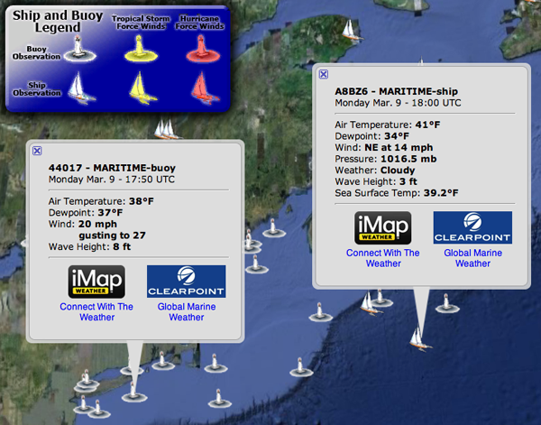
03.09.2009 13:54
USCG Rescue 21
I know I've heard mensions of the
USCG Rescue
21 in the past and I have references to it in my blog:
2007-11: NAIS Incr 2 Synopsis is out! and 2007-02: USCG N-AIS
RFP. The USCG is now doing training for users of the system.
On November 25th the Coast Guard Commandant received a brief from the
Rescue 21 Project Manager regarding the disaster recovery capability
delivered as part of this major systems acquisition. These
capabilities are available to operational commanders prior to, during,
and following natural and/or man-made disasters and include:
* portable radio towers
* fully housed communications shelters
* satellite backup communications
* remotely located watchstander equipment
* remotely located backroom operating equipment
These capabilities were first used and proved vital in the restoration
of radio communications following hurricanes Katrina and Rita and most
recently prior to, during, and following hurricanes Gustav and Ike in
the Sector New Orleans Area of Operation. The remotely located
watchstander equipment allowed Sector New Orleans personnel to safely
evacuate the Sector facility and seamlessly transfer the
communications watch to the Coast Guard Operations Systems Center in
Kearneysville, WV.
Rescue 21 on
Wikipedia:
Rescue 21 will provide the United States with a 21st century maritime command, control, and communications (C3) system that encompasses the entire United States. By replacing outdated technology with a fully integrated C3 system, Rescue 21 improves on the NDRS with the following enhancements: interoperability, direction-finding equipment with 2 degrees of accuracy, enhanced clarity of distress calls, simultaneous channel monitoring, upgraded playback and recording feature for distress calls, reduced coverage gaps, and supporting Digital Selective Calling (DSC).
03.09.2009 07:57
data.gov
Wired has a wiki article of interest:
Open
Up Government Data
I've been attacking the small pieces of government data on the fronts of trying to discover what we have on disks and how do we make metadata generation easier. This is a chance to talk about the top down approach. Not yet addressed are things like:
I've been attacking the small pieces of government data on the fronts of trying to discover what we have on disks and how do we make metadata generation easier. This is a chance to talk about the top down approach. Not yet addressed are things like:
- How do we give researchers and data processors professional credit for releasing data
- How do we make finding data in NGDC and GeoSpatialOne stop easy?
- What do we do about the current ITAR process that hangs up a lot of data?
- We often run into the problem of finding the metadata to a some data, but never actually find the data
- Can we get 3D computer model release built into the contracting process for custom build government contracts?
- How do we maintain the privacy of citizens, while releasing lots of data?
- Can we make this whole process inside the government cost less, while accomplishing more?
03.07.2009 17:03
PDF Presentation from SNPWG
I've just released a PDF of my
presentation a week ago at the Standards for Nautical Publications
Working Group (SNPWG) meeting in Norfolk, VA. I've added some notes
to each PPT slide, but I am definitely missing much of the really
good discussion that occured while I was giving the
presentation.
Schwehr, K., M. Plumlee, B. Sullivan, C. Ware, GeoCoastPilot: Linking the Coast Pilot with Geo-referenced Imagery & Chart Information, IHO Standardization of Nautical Publications Working Group (SNPWG), 10, Norfolk, VA, 26 Feb 2009.
Schwehr, K., M. Plumlee, B. Sullivan, C. Ware, GeoCoastPilot: Linking the Coast Pilot with Geo-referenced Imagery & Chart Information, IHO Standardization of Nautical Publications Working Group (SNPWG), 10, Norfolk, VA, 26 Feb 2009.
03.07.2009 12:47
Trash instead of rm
Trey commented on my last post about
the dangers of rm. He suggested using absolute paths when deleting
to be extra safe and reminded me that people often replace rm with
a command that moves files to a trash area. It's too bad that Apple
doesn't ship something like this by default. There is a ruby
program that provides a trash command: osx-trash and web pages
that give examples of putting something in your .bashrc. Check out
Moving files to trash from the Mac command line for several
examples that cover ruby, python, and bash. Here is my test
trash.bash:
I wish I had a copy the old delete command that either Terry Fong or Eric Nygren had on the old IMG Artemis server. I can't remember if it was a cshrc alias, a shell script, perl, or what.
I'm not a ruby programmer, so I probably should just write a little python package to emulate what the ruby osx-trash does so that everyone with fink can have the same trash functionality.
Python did have modules called Finder and findertools, but these go away in Python 3. I guess that leaves me with learning Python appscript
#!/bin/bash
touch foo bar
function trash {
for file in $@; do
echo trashing $file
osascript -e 'tell application "Finder"' -e "delete POSIX file \"${PWD}/$file\"" -e "end tell"
done
}
trash foo bar
And running it...
% ./trash.bash trashing foo foo trashing bar bar % ls -l /Users/schwehr/.Trash/ total 0 -rw-r--r-- 1 schwehr schwehr 0 Mar 7 12:31 bar -rw-r--r-- 1 schwehr schwehr 0 Mar 7 12:31 foo % ./trash.bash trashing foo foo 12-31-41 trashing bar bar 12-31-41 % ls -l /Users/schwehr/.Trash/ total 0 -rw-r--r-- 1 schwehr schwehr 0 Mar 7 12:31 bar -rw-r--r-- 1 schwehr schwehr 0 Mar 7 12:31 bar 12-31-41 -rw-r--r-- 1 schwehr schwehr 0 Mar 7 12:31 foo -rw-r--r-- 1 schwehr schwehr 0 Mar 7 12:31 foo 12-31-41By asking Mac OSX to handle the trash, it does the right thing for files on different volumes and files with the same name.
I wish I had a copy the old delete command that either Terry Fong or Eric Nygren had on the old IMG Artemis server. I can't remember if it was a cshrc alias, a shell script, perl, or what.
I'm not a ruby programmer, so I probably should just write a little python package to emulate what the ruby osx-trash does so that everyone with fink can have the same trash functionality.
Python did have modules called Finder and findertools, but these go away in Python 3. I guess that leaves me with learning Python appscript
03.07.2009 09:55
Cleaning up your disk
WARNING: be vary careful with the
find and rm
Unix systems can end up with a lot of stale temporary files. The GNU find command command can help with cleanup.
Overall, this saved me about 0.5 GB of disk space on my laptop.
Unix systems can end up with a lot of stale temporary files. The GNU find command command can help with cleanup.
% fink install findutils % cd /var/tmpNow, using find, I can list the files that are older than 90 days.
% find . -mtime +90 | xargs ls -ltrd | head -10 drwx------ 4 root wheel 136 Dec 31 1969 ./orbit-root -r--r--r-- 1 root wheel 6120 Sep 30 2004 ./.BlankFile -rwxr-xr-x 1 root wheel 173 Sep 11 2007 ./tmp.3.RzCQoQ -rwxr-xr-x 1 root wheel 168 Sep 11 2007 ./tmp.2.b3GTEM -rwxr-xr-x 1 root wheel 119 Sep 11 2007 ./tmp.1.BAkCol -rwxr-xr-x 1 root wheel 112 Sep 11 2007 ./tmp.0.6gW3RC -rw-rw-rw- 1 root wheel 48 Sep 11 2007 ./com.apple.speech.synthesis.globals -rwxr-xr-x 1 root wheel 1145 Sep 19 2007 ./tmp.5.yI0YLo -rw------- 1 schwehr wheel 74782 Oct 1 2007 ./47013d873a962 -rw------- 1 schwehr wheel 75155 Oct 2 2007 ./470274484c972Now to remove the files. Be careful here! A typo could do damage to your computer. You have a backup, right?
% find . -mtime +90 | xargs rm find: ./gconfd-root: Permission denied find: ./launchd: Permission denied find: ./orbit-root: Permission denied rm: cannot remove `./.BlankFile': Permission denied rm: cannot remove `./folders.501': Is a directory rm: cannot remove `./gconfd-root': Is a directory rm: cannot remove `./mds/system/mds.install.lock': Permission denied rm: cannot remove `./orbit-root': Is a directory rm: cannot remove `./sortWosd7B': Permission denied rm: cannot remove `./sortwUyfwU': Permission denied rm: cannot remove `./sortXEvhhV': Permission denied ...Without having root, many of the files will not be deleted. You can make this into a script to allow it to be run via sudo. Also, I'm making the rm command recursive.
cat << EOF > cleanup.bash #!/usr/bin/env bash find . -mtime +90 | xargs rm -rf EOF % chmod +x cleanup.bashIf you want to learn more about find, take a look at the manual: GNU Find Manual The actions section shows how you can create a command without xargs.
% find . -exec ls -ld '{}' ';' | head -5
drwxrwxrwt 8 root wheel 272 Mar 7 09:37 .
-rwxr-xr-x 1 schwehr wheel 54 Mar 7 09:29 ./cleanup.bash
-rw------- 1 root wheel 6 Mar 5 08:58 ./krb5kdc_rcache
drwx------ 3 root wheel 102 Mar 5 08:57 ./launchd
find: ./launchd: Permission denied
drwxrwxrwt 5 root wheel 170 Mar 5 08:58 ./mds
Another area of clean is for backup files from your editor. I use
emacs and have edited my .emacs file to put all the backup files in
one place such that I don't have "~" files strewn across my disk. I
can cd ~/.emacs-backup and run the same commands to cleanup
my backup files.
;;; FILE: .emacs -*- lisp -*-
;;; ABSTRACT: Startup file for GNU Emacs
;;; Put backup files not in my directories
(setq backup-directory-alist `(("." . ,(expand-file-name "~/.emacs-backup"))))
;...
Note: It looks like source-highlight doesn't have Lisp as one of
it's supported languages.Overall, this saved me about 0.5 GB of disk space on my laptop.
03.06.2009 22:25
NEG Federal Register
NMFS Seeking Comments on Northeast Gateway Request for Incidental
Harassment Authorization for Marine Mammals [LNG Law
Blog]
E9-4799.pdf
E9-4799.pdf
SUMMARY: NMFS has received a request from the Northeast Gateway Energy Bridge L.L.C. (Northeast Gateway or NEG) and its partner, Algonquin Gas Transmission, LLC (Algonquin), for authorization to take marine mammals incidental to operating and maintaining a liquified natural gas (LNG) port facility and its associated Pipeline Lateral by NEG and Algonquin, in Massachusetts Bay for the period of May 2009 through May 2014. Pursuant to the Marine Mammal Protection Act (MMPA), NMFS is requesting comments on its proposal to issue an authorization to Northeast Gateway and Algonquin to incidentally take, by harassment, small numbers of marine mammals for a period of 1 year. NMFS is also requesting comments, information, and suggestions concerning Northeast Gateway's application and the structure and content of future regulations. ... Summary of Request On August 15, 2008, NMFS received an application from Tetra Tech EC, Inc., on behalf of Northeast Gateway and Algonquin for an authorization to take 12 species of marine mammals by Level B harassment incidental to operation and maintenance of an LNG port facility in Massachusetts Bay. Since LNG Port operation and maintenance activities have the potential to take marine mammals, a marine mammal take authorization under the MMPA is warranted. NMFS has already issued a one-year incidental harassment authorization for this activity pursuant to section 101(a)(5)(D) of the MMPA (73 FR 29485, May 21, 2008), which expires on May 20, 2009. In order to for Northeast Gateway and Algonquin to continue their operation and maintenance of the LNG port facility in Massachusetts Bay, both companies are seeking a renewal of their IHA. On January 26, 2009, Northeast Gateway and Algonquin submitted a revised MMPA permit application with modified activities. The modified activities will also include certain operation and maintenance (O&M) activities to the Algonquin Pipeline Lateral for a limited time. Because the LNG Port facility and Algonquin Pipeline Lateral operation and maintenance activities will be ongoing in the foreseeable future, NMFS will propose regulations pursuant to section 101(a)(5)(A) of the MMPA, which would govern these incidental takes under a Letter of Authorization for up to five years. Under section 101(a)(5)(A), NMFS also must prescribe mitigation, monitoring, and reporting requirements in its regulations. ...This is a pretty long document that'll be reading through soon.
03.06.2009 21:22
Kepler to search for planets
My first job at NASA was working for
William "Bill" Borucki doing work on looking for planets. Bill
is the PI for Kepler. Planet-Hunting
Space Telescope Blasts Off [wired] I wish the mission a great
launch!
Update 2009-03-07: sounds like a successful launch!
Animation of the launch sequence. Who made this video?
The actual launch:
Update 2009-03-07: sounds like a successful launch!
Animation of the launch sequence. Who made this video?
The actual launch:
03.06.2009 21:15
Cosco Busan guilty plea
Guilty plea to San Francisco oil spill charges [Reuters]
The pilot of a cargo ship that spilled 53,000 gallons of oil into San Francisco Bay in November 2007 pleaded guilty on Friday to two criminal charges, the U.S. Department of Justice said. John Cota gave the helm commands that caused the Cosco Busan to hit a tower of the San Francisco-Oakland Bay Bridge in heavy fog. The collision caused an oil spill that killed at least 2,000 birds and required a significant clean-up effort. Cota pleaded guilty to negligently causing the fuel spill in violation of the Oil Pollution Act of 1990, a law enacted in the wake of the Exxon Valdez disaster, and to violation of the Migratory Bird Treaty Act for the deaths of protected migratory birds, federal prosecutors said. ...
03.06.2009 12:02
GMT Grid to 3D model in a PDF
Here are my instructions on how to
create your own 3D object in a PDF. I'm going to start with a GMT
grid, but if you already have a model that MeshLab can read, you
can skip the GMT portion.
Before I start into the details, here are the results:
u3d-bathymetry-in-a-document.pdf Note, the bathymetry is upside down, so you can't see it until you spin it.
First I extended my GMT grid reader to write an Alias Wavefront OBJ file. This is a really just a proof of concept. I'm missing normals, coloring, and have the exact geographic coordinate off for some files. But, it give should give the basic idea.
I had to switch over to a Windows XP Virtual Machine and then it worked:
I copied the u3d and tex files that MeshLab created back to my mac. I edited the LaTeX a bit:
Then drag a region in your document and this menu should appear. Now select the 3D model.
There are some much more impressive models out there on the web. Check out the elephant.pdf at David's Laserscanner Multimedia gallery
Before I start into the details, here are the results:
u3d-bathymetry-in-a-document.pdf Note, the bathymetry is upside down, so you can't see it until you spin it.
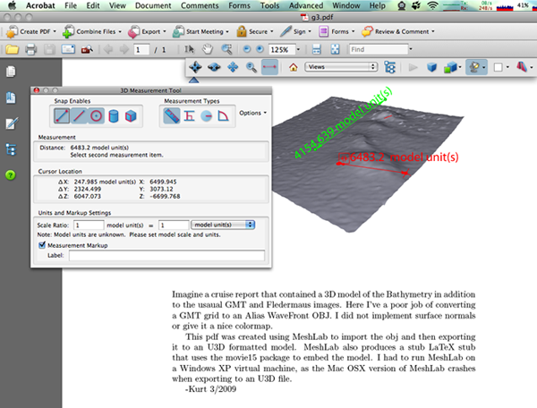
First I extended my GMT grid reader to write an Alias Wavefront OBJ file. This is a really just a proof of concept. I'm missing normals, coloring, and have the exact geographic coordinate off for some files. But, it give should give the basic idea.
class Grd:
# __init__ and info methods the same as I had previously
def xy2point(self,x,y):
'''convert x, y offsets to whatever units the grid is in.
FIX: not properly doing the pixel vrs cell registration!!'''
# FIX: Not right!!!
assert (x < self.width)
assert (y < self.height)
X = self.x_range[0] + self.dx * x
Y = self.y_range[0] + self.dy * y
Z = self.z[x + y * self.width]
if self.scale_factor not in (0.,1.):
Z *= self.scale_factor
Z += self.add_offset
return X,Y,Z
def write_obj(self,out=sys.stdout,convert_coords=True, scale_xy=None, scale_z=None, offset_z=None, center=False):
'''http://local.wasp.uwa.edu.au/~pbourke/dataformats/obj/'''
if isinstance(out,str):
out = file(out,'w')
import datetime
o = out
o.write('# Alias Wavefront OBJ from a GMT grid\n')
o.write('# %s\n' % str(datetime.datetime.utcnow()))
o.write('\n')
filename = self.filename
self.filename = '# %s' % filename
self.info(out=out)
self.filename = filename
o.write('\n')
width = self.width
height = self.height
for y in range(height):
for x in range(width):
if convert_coords:
o.write('v %f %f %f\n' % self.xy2point(x,y))
else:
Z = self.z[x+y*self.width]
X = x
Y = y
if center:
X -= width
Y -= height
if scale_xy:
X *= scale_xy
Y *= scale_xy
if scale_z:
Z *= scale_z
if offset_z:
Z += offset_z
o.write('v %f %f %f\n' % (X,Y,Z))
o.write('\n# Faces. No normals. Sorry\n')
for y in range(height-1):
for x in range(width-1):
# vertex count starts at 1, so an extra +1 to ul and ll
ul = x + y*width + 1
ur = ul + 1
ll = x + (y+1)*width + 1
lr = ll + 1
o.write('f %d %d %d\n' % (ul,ll,ur))
o.write('f %d %d %d\n' % (ur,ll,lr))
grd = Grd('g3.grd')
grd.write_obj('g3.obj',convert_coords=False, scale_xy=100, offset_z=12000, scale_z=40, center=True)
Here I've rerun the code, but kept the coordinates in geographic.
It makes for a terrible looking mode, but it is easier to see the
file format.
# Alias Wavefront OBJ from a GMT grid # 2009-03-06 17:17:44.653066 # g3.grd: Title: # g3.grd: Command: grdcut santabarbF_bath.grd -Gg3.grd -R-120.150001013862/-120.139997147338/34.3899087775448/34.4000213817476 -V # g3.grd: gridline node registration # g3.grd: xmin: -120.150001 x_max: -120.139997 x_inc: 0.000109 name: user_x_unit nx: 93 # g3.grd: ymin: 34.389909 y_may: 34.400021 y_inc: 0.000109 name: user_y_unit ny: 94 # g3.grd: z_min: -260.718994 x_max: -206.770004 name: user_z_unit # g3.grd: scale_factor: 1.000000 add_offset: 0.000000 v -120.150001 34.389909 -211.416000 v -120.149892 34.389909 -211.160995 v -120.149784 34.389909 -210.335999 #... v -120.140323 34.400021 -259.582001 v -120.140215 34.400021 -259.614014 v -120.140106 34.400021 -259.188995 v -120.139997 34.400021 -259.316986 # Faces. No normals. Sorry f 1 94 2 f 2 94 95 f 2 95 3 ... f 8647 8739 8740 f 8647 8740 8648 f 8648 8740 8741 f 8648 8741 8649 f 8649 8741 8742When I models into MeshLab on the Mac and try to export them to U3D, I get this crash:
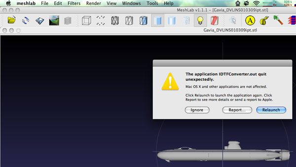
I had to switch over to a Windows XP Virtual Machine and then it worked:
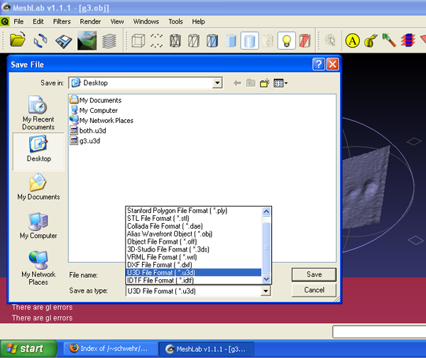
I copied the u3d and tex files that MeshLab created back to my mac. I edited the LaTeX a bit:
\documentclass[a4paper]{article}
\usepackage[3D]{movie15}
\usepackage[UKenglish]{babel}
\begin{document}
\includemovie[
poster,
toolbar, %same as `controls'
label=g3.u3d,
text=(g3.u3d),
3Daac=60, 3Droll=0, 3Dc2c=0 13258.5 0, 3Droo=13258.5, 3Dcoo=4700 2650.22 -4750,
3Dlights=CAD,
]{\linewidth}{\linewidth}{g3.u3d}
Imagine a cruise report that contained a 3D model of the Bathymetry in
addition to the usaual GMT and Fledermaus images. Here I've a poor job
of converting a GMT grid to an Alias WaveFront OBJ. I did not implement
surface normals or give it a nice colormap.
This pdf was created using MeshLab to import the obj and then exporting
it to an U3D formatted model. MeshLab also produces a stub LaTeX stub
that uses the movie15 package to embed the model. I had to run MeshLab
on a Windows XP virtual machine, as the Mac OSX version of MeshLab
crashes when exporting to an U3D file.
-Kurt 3/2009
\end{document}
Then I had to install the movie15 package to allow LaTeX to include
the model.
% fink install movie15Now run latex on the file until this error message goes away:
Package movie15 Warning: @@@@@@@@@@@@@@@@@@@@@@@@@@@@@@@@@@@@@@@@@@@ (movie15) @@ Rerun to get object references right! @@ (movie15) @@@@@@@@@@@@@@@@@@@@@@@@@@@@@@@@@@@@@@@@@@@.It takes three times for the references to build:
% pdflatex g3.tex % pdflatex g3.tex % pdflatex g3.tex % open g3.pdfI then have my PDF containing my model of the bathymetry. If you are not a LaTeX user, then I'm not sure how you can do this other than to use Adobe Acrobat Pro and insert the model.
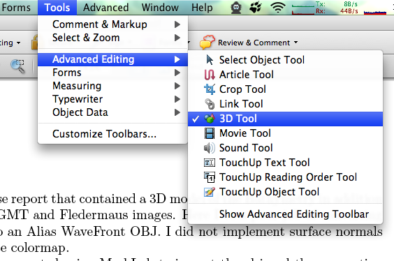
Then drag a region in your document and this menu should appear. Now select the 3D model.
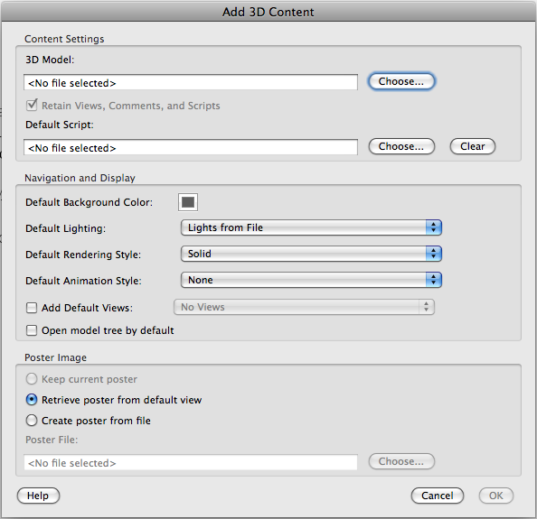
There are some much more impressive models out there on the web. Check out the elephant.pdf at David's Laserscanner Multimedia gallery
03.06.2009 09:59
Inside the Transition: Technogy, Innovation and Government
For those of you who read my blog and
don't read slashdot... America's
New CIO Loves Google
In the video, they mention open data and innovation in the federal government. Also interesting is that there is no mention of Open Source Software. Open Source Software development in government contracts could really be a big boost to the tech industries. Add to that requirement to store and release the CAD models and design documents, and I think it would be a huge change. A model that puts the material to be released into escrow (say for 5 years) before public release could give the contractors a period of time capitalize on their work as they do now.
In the video, they mention open data and innovation in the federal government. Also interesting is that there is no mention of Open Source Software. Open Source Software development in government contracts could really be a big boost to the tech industries. Add to that requirement to store and release the CAD models and design documents, and I think it would be a huge change. A model that puts the material to be released into escrow (say for 5 years) before public release could give the contractors a period of time capitalize on their work as they do now.
03.06.2009 09:23
implementing GMT's grdinfo in python
I've wanted to try this for a long
time and today I had a reason to give it a go. There are several
Python interfaces to GMT. gmtpy works like the
command line programs of GMT. PyGMT (get 0.6
from here) is
a cPython interface to GMT's library to read and write grid files.
I was thinking of using ctypes to interface to the GMT shared
libraries, but then I thought that I would give a go at reading
them using a netcdf package in python. First, I updated
ScientificPython in fink to support python 2.6 and updated to the
latest stable version (2.8).
% fink install scientificpython-py26 % fink install netcdf-binThen I tooks a look at GMT's file specification: B.2.1 NetCDF files and ran ncdump to take look at what is in this file.
% ncdump g3.grd
netcdf g3 {
dimensions:
side = 2 ;
xysize = 8742 ;
variables:
double x_range(side) ;
x_range:units = "user_x_unit" ;
double y_range(side) ;
y_range:units = "user_y_unit" ;
double z_range(side) ;
z_range:units = "user_z_unit" ;
double spacing(side) ;
int dimension(side) ;
float z(xysize) ;
z:scale_factor = 1. ;
z:add_offset = 0. ;
z:node_offset = 0 ;
// global attributes:
:title = "" ;
:source = "grdcut santabarbF_bath.grd -Gg3.grd -R-120.150001013862/-120.139997147338/34.3899087775448/34
.4000213817476 -V" ;
data:
x_range = -120.150001013862, -120.139997147338 ;
y_range = 34.3899087775448, 34.4000213817476 ;
z_range = -260.718994140625, -206.770004272461 ;
spacing = 0.0001087376796, 0.0001087376796 ;
dimension = 93, 94 ;
z = -211.416, -211.161, -210.336, -211.239, -210.711, -211.104, -211.05,
-210.492, -210.516, -211.127, -210.416, -209.976, -209.958, -210.465,
-210.604, -210.624, -209.789, -210.333, -210.214, -210.465, -210.118,
...
}
I then compared this to what I get from the GMT grdinfo command:
% grdinfo g3.grd g3.grd: Title: g3.grd: Command: grdcut santabarbF_bath.grd -Gg3.grd -R-120.150001013862/-120.139997147338/34.3899087775448/34.4000213817476 -V g3.grd: Remark: g3.grd: Gridline node registration used g3.grd: Grid file format: cf (# 10) g3.grd: x_min: -120.15 x_max: -120.14 x_inc: 0.000108738 name: user_x_unit nx: 93 g3.grd: y_min: 34.3899 y_max: 34.4 y_inc: 0.000108738 name: user_y_unit ny: 94 g3.grd: z_min: -260.719 z_max: -206.77 name: user_z_unit g3.grd: scale_factor: 1 add_offset: 0I then worked through all the variables and picked them out of the netcdf. I don't think this code is very stable. GMT allows you to specify specific layers of data with a ?. I also don't handle the case of actual_range verses valid_range. I need to look at the source of GMT to figure out how that look up the grid file format identifiers: seen here as cf (# 10). See 4.17 Grid file format specifications for the different file types.
#!/usr/bin/env python
import sys
from Scientific.IO import NetCDF
node_offset_str={0: 'gridline node registration', 1: 'pixel registration'}
class Grd:
def __init__(self,filename):
self.filename = filename
self.grd = NetCDF.NetCDFFile(filename)
grd = self.grd
self.x_range = grd.variables['x_range'].getValue()
self.x_units = grd.variables['x_range'].units
self.y_range = grd.variables['y_range'].getValue()
self.y_units = grd.variables['y_range'].units
self.z_range = grd.variables['z_range'].getValue()
self.z_units = grd.variables['z_range'].units
self.dx,self.dy = grd.variables['spacing'].getValue()
self.z = grd.variables['z'].getValue() # This is the data... probably not efficient
self.scale_factor = self.grd.variables['z'].scale_factor[0]
self.add_offset = self.grd.variables['z'].add_offset[0]
self.node_offset = self.grd.variables['z'].node_offset[0]
self.width, self.height = grd.variables['dimension'].getValue()
self.dimensions = grd.dimensions
self.title = grd.title
self.source = grd.source
def info(self,out=sys.stdout):
f = self.filename
out.write('%s: Title: %s\n' % (f,self.title))
out.write('%s: Command: %s\n' % (f,self.source))
#out.write('%s: Remark: \n',(f,)) # Where did this come from?
out.write('%s: %s\n' % (f,node_offset_str[self.node_offset])) # registration
#out.write('%s: : \n' % ()) # format
out.write('%s: xmin: %f x_max: %f x_inc: %f name: %s nx: %d \n' % (f,self.x_range[0],self.x_range[1],self.dx,self.x_units,self.width))
out.write('%s: ymin: %f y_may: %f y_inc: %f name: %s ny: %d \n' % (f,self.y_range[0],self.y_range[1],self.dy,self.y_units,self.height))
out.write('%s: z_min: %f x_max: %f name: %s \n' % (f,self.z_range[0],self.z_range[1],self.z_units))
out.write('%s: scale_factor: %f add_offset: %f\n' % (f,self.scale_factor,self.add_offset))
grd = Grd('g3.grd')
grd.info()
Here are the results from this python code. These match pretty well
to the grdinfo.
% ./gmt.py g3.grd: Title: g3.grd: Command: grdcut santabarbF_bath.grd -Gg3.grd -R-120.150001013862/-120.139997147338/34.3899087775448/34.4000213817476 -V g3.grd: gridline node registration g3.grd: xmin: -120.150001 x_max: -120.139997 x_inc: 0.000109 name: user_x_unit nx: 93 g3.grd: ymin: 34.389909 y_may: 34.400021 y_inc: 0.000109 name: user_y_unit ny: 94 g3.grd: z_min: -260.718994 x_max: -206.770004 name: user_z_unit g3.grd: scale_factor: 1.000000 add_offset: 0.000000
03.05.2009 13:51
elog after 2 years
Val and I have been using elog for the last two years to
manage a couple servers. We only have 44 elog entries in that time,
but it has served us well. I have to agree with Val and elog is
simple and gets the job done.
The log files are fairly simple text files:
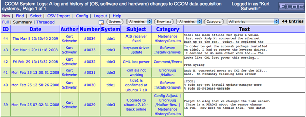
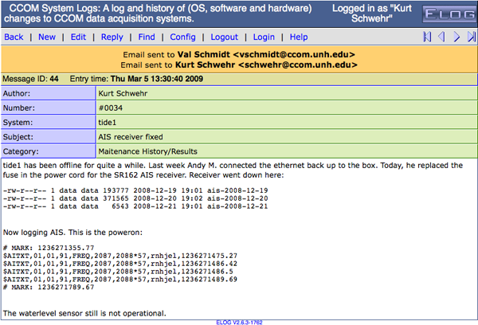
The log files are fairly simple text files:
$@MID@$: 14 Date: Wed, 18 Apr 2007 07:03:43 -0400 Reply to: 15 Author: Kurt Schwehr Number: #0012 Subject: Antenna swap Category: Config Adjust. Attachment: Encoding: ELCode ======================================== I will be switching the AIS antennas this morning going from my rubber ducky to a J-Pole. The rubber ducky will be going with Rick B. for testing pydro.
03.05.2009 10:38
UNH Technology Master Plan
It is exciting to have the university
asking for feedback. UNH
Technology Master Plan: The Future of Technology at UNH. Please
add your comments!! Note that the site is driven by wordpress, so
unlike most of the UNH web services, this one has an RSS
feed.
My background gives me a different perspective on how technology should be deployed compared to how it is done at UNH. For example, I think that Blackboard is divisive to the community and that every faculty member at UNH should be required to create and manage their own webpage even if it is just have having their CV up as a text document. I started at Stanford with Sweet hall containing 100 high end public unix workstations for the entire university all driven by the AFS distributed filesystem that included other universities. I applied for a job at the helpdesk and was probably 50 people away from getting the job after taking the computer consulting class. Almost all questions and answers to computer questions got posted to a news group so that the community could learn from other peoples questions.
At UNH, they now have a blog called the UNH IT Pipeline that gets between 2-6 posts per month. It's a start, but really needs way way more. If UNH is going to be a research institution, we need to draw the community into the resources and try to improve the research environment even as budgets shrink.
An example of missing the mark is the latest post: Joomla:
The front of every UNH Signals newsletter should be a howto switch to getting signals via an RSS feed. Now if we can just get the UNH news site to post more articles about ongoing research here and to get an RSS feed!!!
My background gives me a different perspective on how technology should be deployed compared to how it is done at UNH. For example, I think that Blackboard is divisive to the community and that every faculty member at UNH should be required to create and manage their own webpage even if it is just have having their CV up as a text document. I started at Stanford with Sweet hall containing 100 high end public unix workstations for the entire university all driven by the AFS distributed filesystem that included other universities. I applied for a job at the helpdesk and was probably 50 people away from getting the job after taking the computer consulting class. Almost all questions and answers to computer questions got posted to a news group so that the community could learn from other peoples questions.
At UNH, they now have a blog called the UNH IT Pipeline that gets between 2-6 posts per month. It's a start, but really needs way way more. If UNH is going to be a research institution, we need to draw the community into the resources and try to improve the research environment even as budgets shrink.
An example of missing the mark is the latest post: Joomla:
Basic website creation has become incredibly easy. With the advent of sites like Blogger and LiveJournal, it is a quick and painless task to quickly create your own blog. Perhaps you are not interested in blogging, but want a simple web page. There are a plethora of options, including pubpages (http://pubpages.unh.edu), which is offered by the university. Some are easier to use than others, but all of the options are very limited in both customization and dynamic ability. ...Great! But wait... how do I create a Joomla site and what are the "plethora of options?" And the information on creating pubpages can lead people into using telnet to connect to the server. Why, oh why, does the cisunix server even have telnetd enabled!!??!! The university is worried about security, but doesn't talk about things like not exposing your password to sniffers that are running all over the network.
The front of every UNH Signals newsletter should be a howto switch to getting signals via an RSS feed. Now if we can just get the UNH news site to post more articles about ongoing research here and to get an RSS feed!!!
03.04.2009 15:13
Springer's AuthorMapper - Why not FigureMapper?
SlashGeo has" Mapping
Authors of Scientific Journals. AuthorMapper is neat and I
appreciate the work that went into the website, but I think
Springer has the problem upside down. When somebody researches a
topic, they really are not focused on were the the author works or
lives. They are interested on what area the research was done on.
Getting told that Schwehr is at the University of New Hampshire is
interesting (and good for UNH), but I've done research in many
parts of the world and on Mars. I keeping harping on the same
point: we need to georeference the figures and data of the papers
(not the authors' homes).
What if every Springer journal required WKT bounds for any geospatially located figure? See the GEBCO 2008 poster for the GeoEndNote/GeoSpatialScholar concept:
Monahan, D. Schwehr, K., Wigley, R., Tinmouth, N., Goncalves, D., Jinidasa, P., Uddin, J., Ito, K., Gebco Visual Library, Proof of Concept, GEBCO Annual Meeting, Tokyo, Japan, May 2008.
Or my Google Earth Resume (which needs some serious improvements)...
What if every Springer journal required WKT bounds for any geospatially located figure? See the GEBCO 2008 poster for the GeoEndNote/GeoSpatialScholar concept:

Monahan, D. Schwehr, K., Wigley, R., Tinmouth, N., Goncalves, D., Jinidasa, P., Uddin, J., Ito, K., Gebco Visual Library, Proof of Concept, GEBCO Annual Meeting, Tokyo, Japan, May 2008.
Or my Google Earth Resume (which needs some serious improvements)...
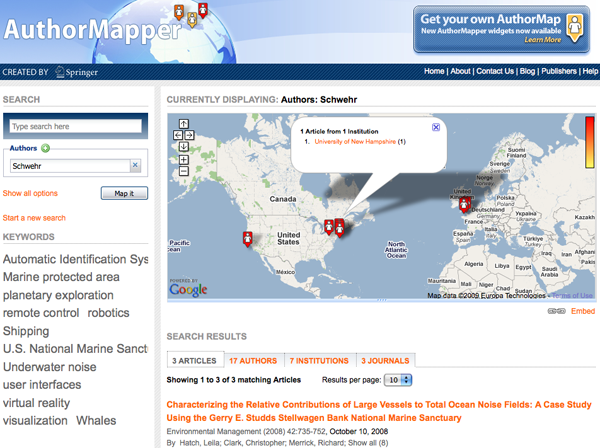
03.04.2009 07:36
Air Traffic visualization
Interact: Watch 24 Brilliant Hours of U.S. Flights by Aaron
Koblin, FlightView and Wired Magazine. Click on the Make and Model
buttons on the right of the visualization on either web page.
03.03.2009 06:10
More Chart of the Future videos
I have been trying to dig out all the
old videos that are around our lab that relate to the Chart of the
Future Project. Uploading them to YouTube doesn't give them the
best quality, but it at least gets them all in one place. Please
comment on the videos if you know more about the background to any
of these. Most of the videos were made by Roland or Matt. Details
are in the more info section of the video. I will post more
videos as I can.
03.02.2009 17:33
Ship tour videos
As a researcher, I often get tours of
vessels and facilities that are not open to many other people. I
try to share what I can, but it is great to see what others can
share. Via Maritime
Monday on gCaptain, I found this video that gives a bit of a
tour of the Littoral Combat Ship, including a small introduction to
their autonomous aircraft.
A little looking around, got me these videos for what NOAA has on youtube.
First is research vessel design from this user: NOAAOceanMediaCenter. The NOAA ship Manta is similar to several other NOAA vessels. It is interesting to compare the differences.
The second account with interesting videos is: SWFSC [NOAA Southwest Fisheries Science Center]
A little looking around, got me these videos for what NOAA has on youtube.
First is research vessel design from this user: NOAAOceanMediaCenter. The NOAA ship Manta is similar to several other NOAA vessels. It is interesting to compare the differences.
The second account with interesting videos is: SWFSC [NOAA Southwest Fisheries Science Center]
03.02.2009 12:31
Fugawi ENC with Google Earth
Check out this screen shot from Art
Trembanis of Fugawi
Marine ENC GPS Navigation Software
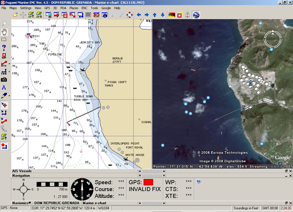
03.02.2009 09:03
Wikipedia internals - how it works
Wikipedia: site internals, etc (the workbook) points to two
presentations about how the software behind wikipedia works.
Wikipedia: Site internals, configuration, code examples and management issues (the workbook) [pdf]
Wikimedia Architecture...
I've used a couple HA systems in the past. Things like DRBD are interesting.
Wikipedia: Site internals, configuration, code examples and management issues (the workbook) [pdf]
Wikimedia Architecture...
- 30 000 HTTP requests/s during peak-time
- 3 Gbit/s of data traffic
- 3 data centers: Tampa, Amsterdam, Seoul
- 350 servers, ranging between 1x P4 to 2x Xeon Quad-Core, 0.5 - 16 GB of memory
- managed by ~6 people
I've used a couple HA systems in the past. Things like DRBD are interesting.
block devices designed as a building block to form high availability (HA) clusters. This is done by mirroring a whole block device via an assigned network.
03.01.2009 13:51
Sometimes bugs are simple but hard to catch
Sometimes the simplest of things can
cause software to not work right. I did a psall (bash: alias
psall='ps -a -w -w -x -O user'), and copied a command.
The real command to run is:
% psall | egrep -i 'python' 15977 schwehr ?? S 5:50.30 python ./ais-net-to-postgis -a 127.0.0.1 -I 0.0.0.0 -s 3 hours ago -S 4 hours ago -c 600 -vWhen I restarted the program, I copied the text from the ps output. However, that stripped off the quotes. This code is using magicdate to figure out relative times "3 hours ago" became 3 and "4 hours ago" became 4. That really was not working! magicdate treats a number as the day of the current month. The two hours ago were getting added to the general command args and ignored by the options flags when using python's optparse.
The real command to run is:
% ./ais-net-to-postgis -a 127.0.0.1 -I 0.0.0.0 -s "3 hours ago" -S "4 hours ago" -c 600 -v &That works much better!
03.01.2009 10:09
Marine License Insurance
This topic is a new one to me. In
many ways, I am an outsider not having a maritime license or a
TWIC. I need to get a TWIC very soon! I try to keep up with as many
of the issues facing mariners as possible.
On gGaptain: Marine License Insurance - An Interview With Admiralty Attorney Ralph J. Mellusi Esq. - Part 1 and Part 2
On gGaptain: Marine License Insurance - An Interview With Admiralty Attorney Ralph J. Mellusi Esq. - Part 1 and Part 2
... With multiple types of insurance working together to protect every element of a voyage their is currently one looming gap; insuring the maritime officers against the revocation or suspensions of their license. To make matters worse some license holders are allowing the U.S.C.G. to serve as judge, jury and executioner by signing a "Settlement Agreement" in which they prematurely - and needlessly - surrender their licenses in the confusing moments following a marine casualty. This happened immediately after the Empress Of the North grounded on a rock near Juneu Alaska. The 3rd mate had been asked to cover the watch of the 2nd mate and, despite knowing a difficult turn would occur on his watch, the captain provided no direct supervision or guidance. This occurred 2 weeks after the mate had graduated from California Maritime Academy. Luckily this individual had the foresight to ask our opinion in the matter and it was quickly resolved. But if the USCG is making demands, you may not have time to find a lawyer and if you do the costs will be high. ...